这一讲另有一份讲义（授课稿）。
讲义写的是怎么讲：每一段的目的、讲到哪里该停、常见的误解、 被问到了怎么答。内容本身在你现在看的这份正文里。
两个用法。自己上台讲：照着讲义讲，台词、切图、时间都写着。 自学：把讲义整份丢给 AI，你会得到一个既有这一讲全部背景、 也知道该怎么讲的助教，让它带你走一遍。
改了一组 kernel 参数，混元3 的 FP8 训练一步从 11.76 秒掉到 7.84 秒。 吞吐快了 50%，这个数你信吗？
| 在什么上跑的 | |
|---|---|
| 模型 | 腾讯混元3（Hy3），295B 参数的 MoE：80 层，除第一层外每层 192 个专家，每个 token 挑 8 个 |
| 机器 | 64 颗 TPU v7x；每颗 2 个 TensorCore，profile 里算 2 个 device，共 128 个 device |
| 切法 | FSDP 64 路：权重切 64 份，每个 device 存一份，用到时再从别的卡拼回来 |
| 精度、框架 | FP8 训练（每个数 1 字节）；MaxText（开源的 JAX 训练框架） |
这是我们自己的调优记录，配置、步时、profile 都是真的。
| 原配方 | 改后 | 口径 | |
|---|---|---|---|
| profile 里的一步 | 11,758.2 ms | 7,842.1 ms | TPU:0 XLA Modules 行上一次 jit_train_step，3 个完整步取中位 |
| MaxText 记的步时 | 11.765 s | 7.853 s | 主机计时（perf/step_time_seconds），含派发，比 profile 长约 0.1% |
| 复跑两次 | — | 7,846.1／7,840.1 ms | 同一配置另跑两次，差 <0.1%：不是抖动 |
「快 50%」说的是吞吐：11,758.2 ÷ 7,842.1 ＝ 1.499；换成步时是少了三分之一（7,842.1 ÷ 11,758.2 ＝ 0.667）。
| 配置项 | 原配方（改前） | 改后 |
|---|---|---|
专家矩阵乘的 tile：w{i,o}_tile_{fwd,dlhs,drhs}_embed_dim（6 个） | 1024 | 2048 |
专家矩阵乘的 tile：w{i,o}_tile_{fwd,dlhs,drhs}_mlp_dim（6 个） | 1024 | 1536 |
use_tokamax_gmm（专家矩阵乘用哪套 kernel：True ＝ tokamax 库的，False ＝ MaxText 自带的） | True | False |
两份配置逐行比，只差这 13 行。换了 kernel 实现、调大了分块，矩阵乘变快——听起来完全说得通。 我们当时也没觉得哪里不对。
*_batch_seq 两边都是 512，没变。真正变了值的是上表 12 个，再加 use_tokamax_gmm。(512, 2048, 1536)。所以「1024 → 2048」不等于 kernel 真用的分块变了。⭐ 好消息不一定是假的，也不一定是真的。打开 profile 之前先花一分钟估一下： 这个数，在这台机器、这种模型上，可能吗？估得出来，打开 profile 时就知道该找什么。
| 词 | 一句话 |
|---|---|
| 一步（step） | 训练里一次「前向 ＋ 反向 ＋ 更新权重」。步时越短，吞吐越高。 |
| MoE、专家 | 每层有很多套并列的前馈网络（专家），每个 token 只挑几套算。混元3 除第一层外每层 192 个专家，每个 token 挑 8 个。 |
| 专家矩阵乘（gmm／tgmm） | 把分到同一个专家的 token 凑在一起做的分组矩阵乘；gmm 算前向和对输入的梯度，tgmm 算对专家权重的梯度。trace 上就叫这两个名字。 |
| tile | kernel 一次搬进片上存储、算完再搬下一块的分块大小。 |
| BF16、FP8 | 两种数的格式：BF16 每个数 2 字节，FP8 每个数 1 字节。v7x 上 FP8 的峰值算力是 BF16 的两倍。 |
| TFLOP/s、MFU | 每秒做多少万亿次浮点运算；MFU ＝ 实际 TFLOP/s ÷ 峰值，第一节细讲。 |
| TensorCore、SparseCore | 一颗 v7x 芯片有 2 个 TensorCore（主核，做矩阵乘），profile 里算 2 个 device；芯片上还有 SparseCore（小核），本课的 trace 里集合通信在它的行上跑。 |
| FSDP | 把权重切成 N 份分给 N 个 device，要用时再拼回来。本课是 64 路。 |
| all-gather、reduce-scatter | 两种集合通信：all-gather 让每个 device 把各自那份拼成全量；reduce-scatter 先求和，每个 device 只留一份。 |
| profile、XProf | profile 是跑的时候录下来的每个算子的起止时间；XProf 是看它的工具，开源，本机就能开（第六节）。 |
估一下用不了一分钟：拿两把尺子量，看它落在哪一堆里。
MFU ＝ 每芯片实际 TFLOP/s ÷ 峰值。v7x 每芯片 BF16 峰值 2,307 TFLOP/s。 算 FP8 时，运算量照样按模型形状数（一次乘加记 2 次运算，和一个数占几个字节无关），分母也照样用 2,307，这样两种精度放在同一把尺子上。
| 每芯片 TFLOP/s | MFU | |
|---|---|---|
| 公开的 MoE（BF16，Qwen3-235B／DeepSeek-V3） | 629.8／612.7 | 27.3%／26.6% |
| 混元3 BF16（64 芯片，tile 调好） | 662.3 | 28.7% |
| 混元3 FP8 原配方 | 677.0 | 29.3% |
| 混元3 FP8 改后 | 1,014.8 | 44.0% |
| 稠密 llama3.1-405B（BF16） | 1,261.4 | 54.7% |
改后那一行一下子从 MoE 那一堆里跳出来，离稠密模型只差一截。怎么看出来的：每芯片 TFLOP/s ＝ MaxText 记的 每 device 每步运算量 3,981.54 TFLOP × 2（一颗芯片 2 个 device）÷ 步时。两份 FP8 的运算量一模一样，所以 MFU 涨多少，完全是步时短了多少。
import sys, statistics
from tensorboard.backend.event_processing.event_accumulator import EventAccumulator
ea = EventAccumulator(sys.argv[1]); ea.Reload()
v = lambda k: [e.value for e in ea.Scalars(k)]
t = statistics.median(v("perf/step_time_seconds")[2:]) # 跳过前两步；取中位数，躲开预热和写 profile 那一步
f = v("perf/per_device_tflops")[-1] # 每 device 每步的运算量（TFLOP）
chip = 2 * f / t # v7x 一颗芯片 2 个 device
print(f"步时 {t:.3f} s 每芯片 {chip:,.1f} TFLOP/s MFU {chip / 2307:.1%}")五条口径。下面五行是这一课从头到尾用的口径，每一行的坑都是真踩过或差点踩的：
| 量什么 | 本课怎么算 | 坑 |
|---|---|---|
| 步时 | profile 里 TPU:0 XLA Modules 行上的 jit_train_step，抓到的 3 个完整步取中位（11,758.2／7,842.1 ms）；或 MaxText 写的 perf/step_time_seconds 跳过前两步取中位 | Overview 的「Average Step Time」按主机记的步边界切、取平均，长 0.2–0.3%（2.1）；开了 profile 的那几步会被写文件拖长，取中位不取平均 |
| 每 device 的 TFLOP/s | MaxText 记的每 device 每步运算量 3,981.54 TFLOP ÷ 步时；两份 FP8 记的运算量一模一样 | 这个运算量是按模型形状算的，不是实测：只能说明记了多少活，不能说明干了多少 |
| MFU | 每芯片 TFLOP/s ÷ 2,307（每芯片 BF16 峰值；一芯片 2 个 device） | XProf 页面用每 TensorCore 1,028.75，乘 2 也只有 2,057.5；换算前先统一分母（上面折叠块） |
| FP8 的 TFLOP/s | 运算量照样按模型形状数，和精度无关；分母照样 2,307 | 除 FP8 峰值 4,614，MFU 凭空减半（1,014.8 ÷ 4,614 ＝ 22.0%） |
| 显存 | 会不会放不下，看运行时的峰值；峰值是谁占的，看编译器给程序排的账（3.6） | 这两个峰值差好几 GiB，别混用（3.6） |
屋顶线回答「一个算子最快能多快」：横轴是算术强度（每从显存搬一个字节，做几次运算）， 左边斜坡受搬运带宽限制，右边平顶受算力峰值限制，两段交在拐点。
📌 屋顶线常数：开源 XProf Roofline 页 Device Information（TPU v7x，每 TensorCore 峰值 1,028.75 TFLOP/s、HBM 3,433 GiB/s）；拐点 279.1 FLOP/B 与 TUNING-v7 §2.7 读出的 279.085 一致。
📌 FP8 峰值 ×2：每芯片 FP8 4,614 ÷ BF16 2,307（TUNING-v7 §1.1 的 MFU 分母）。
📌 涨幅：llama3.1-405B BF16→FP8 +52.8%、DeepSeek-V3 612.7→743.5（+21.4%），Ironwood 官方实测表，转引自 TUNING-v7 §1.2；混元3 改后 1,014.8 ÷ BF16 662.3 ＝ 1.532（64 芯片，TUNING-v7 §3.4.6 表）。
⚠️ 本课推导：FP8 拐点 558 ＝ 279 × 2（平顶翻倍、带宽不变）；一步最多快 1 ÷ (1 − p/2)，假设 FP8 只把矩阵乘的时间最多砍半、其余不变；反推 p ≥ 2 × (1 − 1/涨幅)。通信若没藏住，量化后通信字节也减半，这时要把暴露的通信也算进 p —— 本例原配方暴露通信约 0.2 s／步，不改结论。
⚠️ 示意：强度 1,000 的点是示意，不是混元3 的某个实测 kernel；混元3 的 BF16 和 FP8 两份 batch 不同（12 vs 7），比的是每芯片 TFLOP/s。
FP8 让一个数从 2 字节变 1 字节，两头各翻一倍：落在平顶上的矩阵乘，平顶抬高一倍；落在斜坡上的，要搬的字节减半，点往右挪一倍，沿斜坡也正好快一倍。 所以一个矩阵乘最多快一倍，而且只有矩阵乘吃这一倍：路由、按专家重排 token、逐元素运算、通信，都不在这张图上。
公开实测报的都是「同一个模型从 BF16 换 FP8，每芯片 TFLOP/s 涨多少」，所以混元3 也拿自己的 BF16（662.3）当起点。 这和第零节的 1.50 倍不是一回事：那个是拿 FP8 原配方当起点。
📌 llama3.1-405B BF16 1,261.4（MFU 54.7%）、FP8 +52.8%；DeepSeek-V3 612.7 → 743.5；MoE BF16 水位 600–630（Qwen3-235B 629.8、DeepSeek-V3 612.7）：Ironwood 官方实测表，全部 bf16 口径、synthetic、每芯片，转引自 TUNING-v7 §1.2。
📌 混元3（64 芯片、80 层、seq 4096）：BF16 tile 调好 662.3（20.61 s）、FP8 原配方 677.0（11.761 s）、FP8 改后 1,014.8（7.847 s），TUNING-v7 §3.4.6 表；677.0 和 1,014.8 本课由 MaxText 记的每 device 每步 3,981.54 TFLOP × 2 ÷ 步时复算。
⚠️ 本课推导：405B 的 FP8 点 ≈ 1,261.4 × 1.528 ≈ 1,927（原表只给涨幅）；混元3 两个涨幅 ＝ 677.0 ÷ 662.3、1,014.8 ÷ 662.3。
⚠️ FP8 的 TFLOP/s 照 BF16 等价运算量算、照样除 2,307；若除 FP8 峰值 4,614，MFU 会凭空减半（TUNING-v7 §1.2 的提醒）。混元3 的 BF16、FP8 两份 batch 不同（12 vs 7）。
⭐ DeepSeek-V3（MoE）换 FP8 只多出两成，混元3 原配方只多出 2%。改后这一份比混元3 BF16 多出 53%，和稠密的 405B 一样。 要么改后这份把 MoE 的老毛病全治好了，要么有什么东西不对。
估不出真假，但估出了该看什么。少掉的 3.9 秒总得落在某些算子上：
| 如果是真快 | 如果有问题 |
|---|---|
| 同样那些算子都还在，只是每个变短了，主要是专家矩阵乘 | 有一类算子整块变没了，或者短得离谱 |
| 通信该多少还是多少 | 通信也跟着少了 |
⭐ 好得不像真的，先估再看。带着这张表打开 profile：少掉的 3.9 秒落在哪些算子上，通信还在不在。
带着第一节的问题打开 profile：少掉的 3.9 秒落在哪些算子上？是同样的活干快了，还是有一类活不见了？
⭐ 一分半钟走完整条路：Overview 两份 → Trace Viewer 收拾成一步 → 认行 → 同一层上下并排。
| 停 | 操作 | 看到什么算做对 |
|---|---|---|
| 1–2 | 两份 Overview 各看左栏 | 步时 11,793.8 → 7,857.0 ms；TPU Duty Cycle 两份都是 99.9% |
| 3 | 打开 Trace Viewer | 整份会话：8 个 TensorCore 进程，每个下面两颗 SparseCore，几十行 |
| 4 | 点 Collapse All | 一个进程收成一行 |
| 5 | 只留 /device:TPU:0 和 SparseCore 0／1，Expand All | TPU:0 下有 Steps、XLA Modules、XLA Ops；小核下有 Sparse Core Ops |
| 6 | 单击 train 7 那块 jit_train_step | Details：Wall Duration 11,758,171,824 ns（单位 ns，去掉后 6 位读 ms） |
| 7 | 按 f（画面从整份会话放大到这一步） | 一步铺满一屏：前向 scan 2.70 s、反向 scan 8.31 s |
| 8 | 认行 | 时长只从 XLA Ops、Sparse Core Ops 读；其余是标签 |
| 9 | 链接里写 view_start／view_end 打开 40 号层（画面从一步放大到这一层） | 原配方前向这一层：3 个专家矩阵乘各 3.3–3.4 ms，小核上 3 条收 192 个专家的 all-gather |
| 10–11 | 同一层 A/B 上下叠：前向、反向 | 原配方小核上有收 192 个专家的 all-gather（前向、反向）和专家梯度 reduce-scatter（反向）；改后那几段是空的 |
| 12 | 小结 | 少的是两件事：把 192 个专家收齐、把专家梯度散回去 |
原片 topic07-xrec-open.mp4（末帧 png）。下面四小节把每一停拆开讲，图都是同一窗口的静态截图。
XLA Ops、Sparse Core Ops 两行是实测，见 2.3）；
虚线框 ＝ 这里没有：原配方同一位置有、改后这一段是空的；灰色竖虚线 ＝ 本层结束，右边已经是下一层（2.5 小例子里的竖虚线 ＝ 两条事件右沿对齐）。
XProf 里色块的颜色没有含义，同名同色而已。⭐ 两份主核都没闲着（Duty Cycle 99.9%）：少掉的 3.9 秒出在主核干的活上，去 Trace Viewer 看它干了什么。
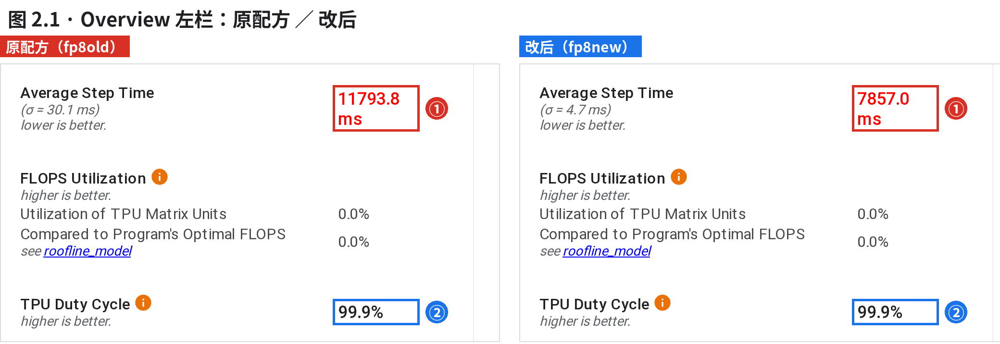
| # | 是什么 | 页面上读到什么（框按页面文字的位置画） |
|---|---|---|
| ① | Average Step Time | 平均步时：原配方 11,793.8 ms、改后 7,857.0 ms（XProf 按主机记的 3 步取平均，比 jit_train_step 中位步长 0.2–0.3%） |
| ② | TPU Duty Cycle | 主核忙的时间占比：两份都是 99.9%。主核停在 done 上等通信也算「忙」，所以它只说明没有大段空转 |
打开 profile 默认落在 Overview。它回答两件事：一步多长、主核有没有大段空着。Duty Cycle 是主核有活的时间占比，两份都是 99.9%。 停在 done 上等通信（2.5 讲 done）也算「有活」，所以它只说明没有大段空转，等了多少要去 Trace Viewer 里看。左栏其余几格见下面的 2.1B。
本课用到的 7 份 profile 公开在 GitHub Release topic07-hy3-profiles-v1（混元3 在 64 颗 TPU v7x 上的训练，每份是一台主机抓的 3 步，一份解压后 1.2–1.45 GB；除了主机名换成 gke-node-N，其余原样）。下面四步从下载到打开，命令可以直接复制：
# 1. 下载（7 个附件共 0.86 GB；只看一两份就只下那几个）
mkdir -p ~/hy3-prof && cd ~/hy3-prof
B=https://github.com/yangwhale/gpu-tpu-pedia/releases/download/topic07-hy3-profiles-v1
for r in fp8old fp8new fp8nat r3anat fp8tk bf16old bf16new; do curl -fLO $B/hy3-$r.tar.zst; done
curl -fLO $B/SHA256SUMS && sha256sum -c SHA256SUMS
# 只下了几份就加 --ignore-missing；macOS 用 shasum -a 256 -c SHA256SUMS
# 2. 解压（共 9.2 GB）：每个 tar 里已经是 <run>/plugins/profile/<时间戳>/<主机>.xplane.pb
# 没有 zstd 命令先装：apt install zstd ／ brew install zstd
for f in hy3-*.tar.zst; do zstd -dc "$f" | tar -xf -; done
# 3. 装开源 XProf，指向这个目录
# ==2.23.1 是本课截图用的版本，去掉就装最新版
pip install xprof==2.23.1
xprof --logdir ~/hy3-prof --port 6311
# 也可以用 TensorBoard：pip install tensorboard tensorboard-plugin-profile
# 再 tensorboard --logdir ~/hy3-prof --port 6311，进 PROFILE 页
# 4. 浏览器开 http://127.0.0.1:6311/
# 左栏 Sessions 下拉选 run（如 fp8old/2026_08_15_03_57_28），Tools 选工具<logdir>/<run>/plugins/profile/<时间戳>/<主机>.xplane.pb，logdir 下每个子目录是一个 run。解压完 ~/hy3-prof 下就是 7 个 run 目录；自己抓的 profile 照这个结构摆进来也能一起看。| run | 是什么 | 中位步（ms） | 解压后的文件 |
|---|---|---|---|
fp8old | FP8 原配方（tokamax，注入 tile 512／2048／1536） | 11,758.2 | fp8old/plugins/profile/2026_08_15_03_57_28/gke-node-1.xplane.pb |
fp8new | FP8 改后（native ＋ 12 个新 tile 值）：快了 50% 的那一份 | 7,842.1 | fp8new/plugins/profile/2026_08_15_04_11_46/gke-node-1.xplane.pb |
fp8nat | fp8new 的复跑 | 7,846.1 | fp8nat/plugins/profile/2026_08_15_16_59_57/gke-node-4.xplane.pb |
r3anat | fp8new 的再一次复跑 | 7,840.1 | r3anat/plugins/profile/2026_08_16_01_29_28/gke-node-5.xplane.pb |
fp8tk | 原配方但没注入 tile（默认 128×128×128）：375 s 那一份 | 375,160.0 | fp8tk/plugins/profile/2026_08_15_17_48_55/gke-node-4.xplane.pb |
bf16old | BF16，改之前（tokamax，注入 tile） | 21,747.2 | bf16old/plugins/profile/2026_08_15_09_13_02/gke-node-2.xplane.pb |
bf16new | BF16，做同一个改动之后（native ＋ 同 12 个 tile 值） | 20,693.8 | bf16new/plugins/profile/2026_08_15_09_28_25/gke-node-3.xplane.pb |
fp8old、改后 fp8new；其余五份在 3.5（375 秒那份）、第五节（BF16）和练习页用到。拿你自己的 profile，换掉 run 名、时间戳、主机名和下面的窗口就行。http://127.0.0.1:6311/?run=fp8old/2026_08_15_03_57_28&tag=overview_page&host=gke-node-1，或者首页左栏 Tools 下拉选 Overview Page。view_start／view_end（距 profile 起点的毫秒）。下面几行打印链接，换 run 和窗口就能开本课任何一屏：import urllib.parse as u
D = {"fp8old": ("2026_08_15_03_57_28", "gke-node-1"),
"fp8new": ("2026_08_15_04_11_46", "gke-node-1"),
"fp8nat": ("2026_08_15_16_59_57", "gke-node-4"),
"r3anat": ("2026_08_16_01_29_28", "gke-node-5"),
"fp8tk": ("2026_08_15_17_48_55", "gke-node-4"),
"bf16old": ("2026_08_15_09_13_02", "gke-node-2"),
"bf16new": ("2026_08_15_09_28_25", "gke-node-3")}
run, vs, ve = "fp8old", 25476.963, 25512.640 # 原配方前向 40 号层（图 2.4A）
d, host = D[run]
data = f"/data/plugin/profile/data?run={run}/{d}&tag=trace_viewer@&host={host}&hosts={host}"
print("http://127.0.0.1:6311/data/plugin/profile/trace_viewer_index.html?is_streaming=true&is_oss=true"
f"&trace_data_url={u.quote(data, safe='')}&view_start={vs}&view_end={ve}")/device:TPU:0 和它两颗 SparseCore 以外的进程 → Expand All。从首页 Tools 里点进去的 Trace Viewer 不认链接里的窗口，打开就是整份会话。fp8old／fp8new，工具 overview_page，只看左栏 Performance Summary。⭐ 开源 2.23.1 的 Overview 左栏七格里，读得出东西的是步时和 Duty Cycle；FLOPS、HBM 两组显示 0.0%，Op Placement、Eager 两组对 JAX 训练恒定；SparseCore 的步时和空闲，左栏没有这一格。
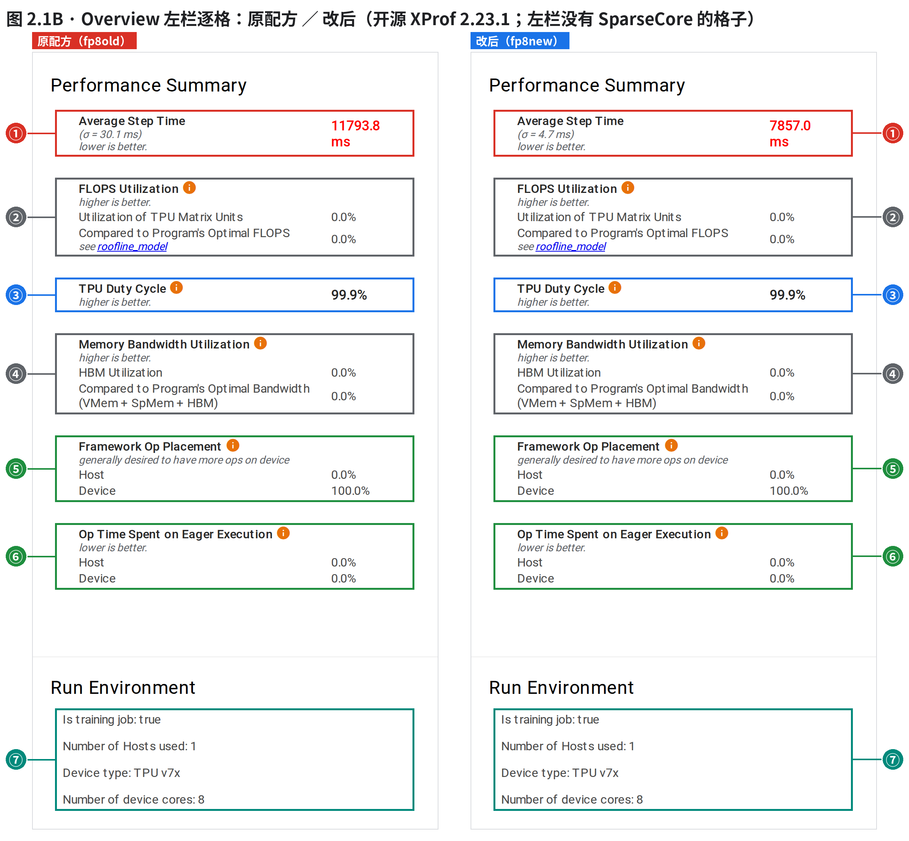
| # | 是什么 | 两份读数（页面原文；括号里的补充数取自同一页的数据接口） |
|---|---|---|
| ① | Average Step Time | 11,793.8 ／ 7,857.0 ms（σ 30.1 ／ 4.7 ms）：3 步平均，步边界按主机记的切；比 0.1 节 jit_train_step 的中位步长 0.2–0.3% |
| ② | FLOPS Utilization 两格 | 两份都是 0.0%：开源 2.23.1 这一格没算出来，不是真为 0；利用率去 Roofline、Op Profile 读（第三节） |
| ③ | TPU Duty Cycle | 99.9% ／ 99.9%：主核有活的时间占比。每步空着的只有 11.09 ／ 12.00 ms（数据接口里的 tc_idle_ms_average，页面右边 Step-time Graph 的 TensorCore idle） |
| ④ | Memory Bandwidth Utilization 两格 | 两份都是 0.0%：同 ②，开源版没算出来 |
| ⑤ | Framework Op Placement | Host 0.0%、Device 100.0%（两份一样）：算子全在设备上跑。训练 JAX 程序本来就是这样，读 profile 用不上 |
| ⑥ | Op Time Spent on Eager Execution | Host、Device 都是 0.0%：没有逐条即时执行的算子（JAX 整步 jit 编译），用不上 |
| ⑦ | Run Environment | 训练作业、1 台主机、TPU v7x、8 个 device core（4 颗芯片 × 每颗 2 个 TensorCore）。两份一样 |
2.1 只读了 ① 和 ③。左栏还有五格，第一次打开都会想：这些要不要看？两份对着读一遍，② ④ 两份都是 0.0%，⑤ ⑥ ⑦ 两份一字不差，能区分两份的只有 ① 和 ③。 那小核（SparseCore）忙不忙？这一栏里没有它的格子，右边的 Step-time Graph 也只画 TensorCore：小核忙多久、在搬什么，去 Trace Viewer 看小核那一行（2.4、2.5）。
页面背后的数据接口带着这几个字段（现场打开里有命令）：
| 数据接口里的字段 | 意思（按字段名） | 原配方 | 改后 |
|---|---|---|---|
sc_step_time_ms_average | SparseCore 步时 | 8606.2 ms | 5001.9 ms |
sc_idle_ms_average | SparseCore 空闲 | 5234.02 ms | 3341.18 ms |
sc_compute_ms_average | SparseCore 计算 | 1582.65 ms | 1622.52 ms |
sc_infeed_ms_average | SparseCore infeed | 0.00 ms | 0.00 ms |
sc_outfeed_ms_average | SparseCore outfeed | 0.00 ms | 0.00 ms |
tc_idle_ms_average | TensorCore 空闲（对照） | 11.09 ms | 12.00 ms |
xprof/convert/op_stats_to_input_pipeline_analysis.cc 里，每颗 SparseCore 每步算「计算 ＝ 步长 − 空闲」；同一步里，步长和空闲取 16 颗的平均，计算取 16 颗里最小的，再在步之间平均。
所以步长 − 空闲 ＝ 8606.2 − 5234.02 ＝ 3372.2，是计算的平均值；sc_compute 的 1582.65 是最闲那一颗的。SparseCore 的步按它自己那一行 Sparse Core Steps 切，不等于主核的一步。tcIdleTimeMs）：原配方 5.5／13.9／13.9 ms，改后 5.8／15.3／15.0 ms；第 0 步都只有五毫秒多，后两步十几毫秒 [未核原因]。fp8old／fp8new，工具 overview_page：http://127.0.0.1:6311/?run=fp8old/2026_08_15_03_57_28&tag=overview_page&host=gke-node-1，左栏从上往下就是 ①→⑦（Run Environment 要往下滚）。sc_* 字段）：curl -s --compressed "http://127.0.0.1:6311/data/plugin/profile/data?run=fp8old/2026_08_15_03_57_28&tag=overview_page&host=gke-node-1" | python3 -m json.tool | grep -E "sc_|tc_idle"，换 run 名和时间戳读改后那份。⭐ 一屏只留一步：前向一个循环、反向一个循环，各转 78 圈、一圈一层。两份骨架一样，改后整体短了三分之一。
Trace Viewer 把每个算子画成一个色块，横轴是时间。打开是整份会话、几十行（录屏停 3）。四步收拾：Collapse All → 点其余进程右端的 X，只留
/device:TPU:0 和它下面的 SparseCore 0、SparseCore 1（其余 device 的行一模一样）
→ Expand All → 在 XLA Modules 行上单击中位那一步的 jit_train_step，按 f 铺满一屏。
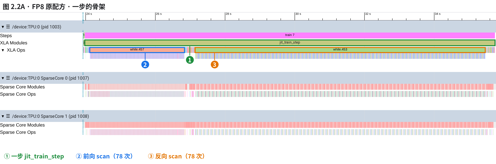
| # | 是什么 | 怎么看出来（事件名、时刻都从 xplane 读） |
|---|---|---|
| ① | 一步 jit_train_step | 一步：XLA Modules 行上的 jit_train_step，11,758.17 ms（3 个完整步的中位步） |
| ② | 前向 scan（78 次） | 前向 scan：while.457，2,704.03 ms，循环 78 次（0 号层被编译器剥到循环前面单独算，见下面折叠块） |
| ③ | 反向 scan（78 次） | 反向 scan：while.453，8,313.25 ms，循环 78 次，层号倒着走 |
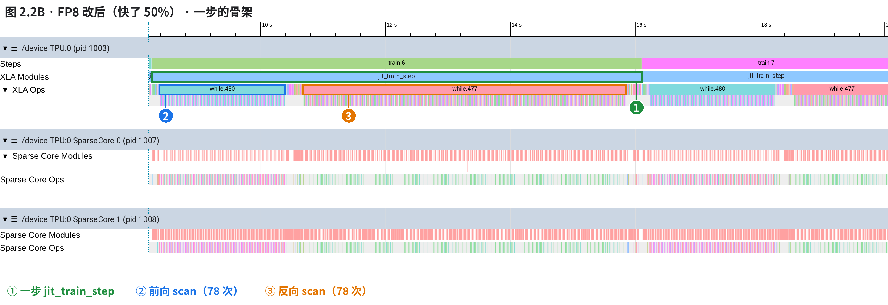
| # | 是什么 | 怎么看出来（事件名、时刻都从 xplane 读） |
|---|---|---|
| ① | 一步 jit_train_step | 一步：XLA Modules 行上的 jit_train_step，7,842.07 ms（3 个完整步的中位步） |
| ② | 前向 scan（78 次） | 前向 scan：while.480，1,998.05 ms，循环 78 次（0 号层被编译器剥到循环前面单独算，见下面折叠块） |
| ③ | 反向 scan（78 次） | 反向 scan：while.477，5,168.26 ms，循环 78 次，层号倒着走 |
一颗 v7x 芯片 2 个 TensorCore，profile 里算 2 个 device，只留一个看就够了。
scan：配置里 scan_layers=True：MaxText 把 79 个结构相同的 MoE 层叠成一个循环来编译，编译出来叫 while，trace 上就是 ② ③ 两个大块，里面一圈一层。
两份对比：前向 2,704.0 → 1,998.1 ms，反向 8,313.2 → 5,168.3 ms，两段都短了，反向短得多（3.1 s）。
📌 步起止：TPU:0 XLA Modules 上 jit_train_step 的中位步（3 个完整步取中位），fp8old 23,983.849–35,742.021 ms，fp8new 8,262.067–16,104.132 ms（距 profile 起点）。
📌 两个 while 的起止：fp8old while.457 24,125.829–26,829.855、while.453 27,147.384–35,460.634；fp8new while.480 8,386.321–10,384.372、while.477 10,687.259–15,855.523 ms。五段之和与步时差不到 0.1 ms。
📌 每段里是什么：按顶层叶子的名字、tf_op 和形状认。循环前的 fusion.502 吃的是词表（bf16[120832,4096]）；稠密层的中间维是 13,312（配置 mlp_dim）；两个循环之间有两次 bf16[7,4096,120832] 的输出头矩阵乘，8 颗专家矩阵乘（gmm 3、gmm_t 3、tgmm 2）属于 MTP 层；反向之后的 multiply_reduce_fusion 融合体里是 AdamW 的一阶、二阶矩和权重衰减（0.9／0.95／1e-8／0.1，与配置一致）。
📌 0 号 MoE 层为什么在循环外：编译器把它从 scan 里剥了出来，前向在循环前、反向在循环后（正文「79 层为什么只转 78 圈」折叠里有出处）。
| 停 | 操作 | 看到什么 |
|---|---|---|
| 1 | 链接里写窗口，直接开到原配方前向 40 号层，已收拾成 TPU:0 ＋ 两颗小核 | 一屏 35.7 ms |
| 2 | 鼠标停在 gmm_megablox.16 上，按 3 次 W | 以鼠标为中心放大，一屏 10.6 ms，名字露出来 |
| 3 | 按 3 次 S 缩回，按 2 次 D 往右平移 | 窗口右挪约 10 ms；A 往左 |
| 4 | A 挪回来，单击 gmm_megablox.16 | Details：Wall Duration 3,425,196 ns（去掉后 6 位读 ms） |
| 5 | 单击小核上的 all-gather.575，按 m | 区间标在标尺上（3.981 ms），同一段时间主核在算 gmm_megablox.16 |
| 6 | 还选着它，按 f | 选中的那块铺满一屏，m 标的 3.981 ms 正好一屏宽 |
| 7 | 另开一页同一层：单击一颗、按住 Ctrl（Mac 是 Command）再单击两颗 | 「3 items selected.」，Totals 10,106,678 ns ＝ 三颗合计 10.1 ms |
| 8 | 顶上 Find Events 输入 gmm_megablox.16 回车 | 「0 of 1872」，画面不跳；1,872 ＝ 78 圈 × 3 步 × 8 个 TensorCore，关掉的进程也算；坑：关掉的进程又全冒回来了 |
| 9 | 点框右边的 → | 跳到第一个：train 5 里那一颗，3,329,133 ns |
快捷键要鼠标停在时间线上才生效；时长单位是 ns；转圈的时候点了不算。原片 topic07-xrec-basics.mp4。
⭐ 主核的 XLA Ops、小核的 Sparse Core Ops 是实测行，一个色块 ＝ 一条指令执行一次；其余的行是标签。
| 行 | 是什么 | 读什么 |
|---|---|---|
Steps | 训练第几步（train 5／6／7），主机记的 | 标签：认步，不量时长 |
XLA Modules | 正在跑哪个编译好的程序；一块 jit_train_step ＝ 一步 | 一步的起止读它 |
XLA Ops（实测） | 主核（TensorCore）上每条指令；上层的大块是循环，下层是循环里的指令 | 算子时长只数最底层 |
Sparse Core Modules | 小核上正在跑哪个程序 | 标签 |
Sparse Core Ops（实测） | 小核（SparseCore）上每条指令：集合通信（all-gather、reduce-scatter、all-reduce）和按专家搬 token（gather_offload） | 通信时长读它 |
这份 trace 里集合通信跑在小核的行上：主核发令以后接着算别的，小核在旁边搬数据。所以通信少了，要看小核那一行；主核上只留下发令（start）和等它做完（done）两个记号，2.5 的小例子会用到。
📌 右边的事件全部取自 fp8old 那份 xplane（TPU:0 的 XLA Ops、两颗 SparseCore 的 Sparse Core Ops），和正文 2.5 的静态图、agdone 动画是同一批：start 31,219.512 ms；小核 0 上 all-gather.547 31,223.777–31,226.183 ms（2.406 ms）；主核 all-gather.548.cloned.1.call-done 31,225.002–31,226.183 ms（1.181 ms）；放行后 gmm_megablox.14 从 31,226.184 ms 开始。
📌 主核 start 之后那一小簇是十几微秒内的几十个碎块（sort、slice、copy 之类），没有逐个画。小核 0、1 上那两条是 gather_offload_custom_fusion.68／.64（按专家搬 token）。
📌 行名照本机开源 XProf 2.23.1 的 Trace Viewer 抄；Framework Name Scope 实际是好几层（名字路径一段一层），这里并成一行。xplane 里还有一行 Async XLA Ops，正文没用到，没画。
单击任何一个色块，底下出 Details：左边是这条指令的字段，右边是跳转和上下游。计算算子和通信 done 各看一次。
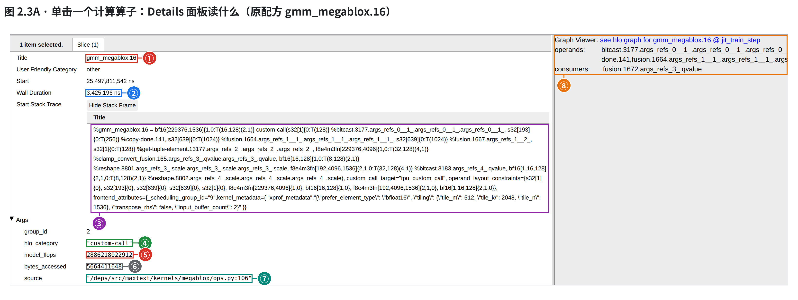
| # | 是什么 | 读什么（框按页面里那段文字的位置画） |
|---|---|---|
| ① | Title：色块名 | gmm_megablox.16：就是 HLO 里这条指令的名字（去掉 %） |
| ② | Wall Duration：多长 | 3,425,196 ns ＝ 3.43 ms。单位是 ns，色块宽度就是它；上一行 Start 是距 profile 起点的时刻 |
| ③ | Start Stack Trace：HLO 原文 | 这条指令编译后的那一行：输出形状、每个操作数的类型和名字都在这里，第四节就靠它数形状（图 4.1 逐个符号读） |
| ④ | hlo_category：哪一类 | "custom-call"：调一个外部 kernel（这里是 Pallas 写的专家矩阵乘）。第三节 Op Profile 按类别分组，用的就是这一格 |
| ⑤ | model_flops：记了多少 FLOPs | 2,886,218,022,912 ＝ 2 × 229,376 × 4,096 × 1,536：按形状算出来的。改后那颗 gmm.27 只跑 0.04 ms，这一格还是同一个数（本机点开核过），第三节 3.2 的 117% 就是这样按形状记账记出来的 |
| ⑥ | bytes_accessed：记了多少字节 | 5,664,411,648：编译期估的读写字节数，也是按形状算的（改后 gmm.27 是 5,664,407,552，几乎没变） |
| ⑦ | source：哪一行 Python | megablox/ops.py:106：公开 MaxText 里 return gmm_fwd_bwd(…) 那一行（gmm 的入口）。下面的 source_stack 是整条调用栈，第四节 4.5 照着它回到代码 |
| ⑧ | 右栏：跳转与上下游 | Graph Viewer 链接（第四节 4.3 从这里进）、operands 吃谁的输出、consumers 输出给谁 |
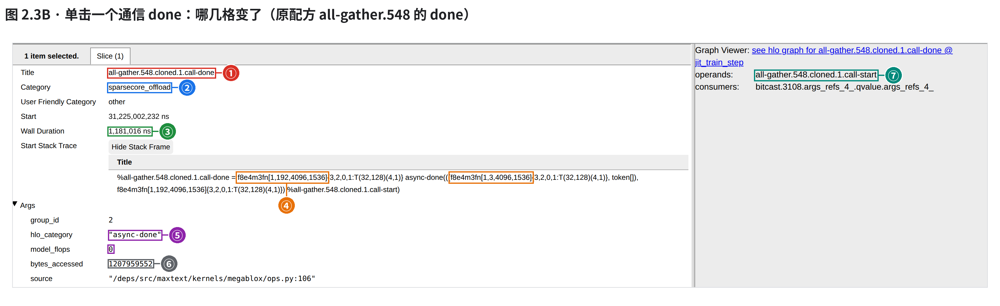
| # | 是什么 | 读什么（框按页面里那段文字的位置画） |
|---|---|---|
| ① | Title：…call-done | all-gather.548.cloned.1.call-done：集合通信拆成发令（start）和等它做完（done）两条指令，这是 done 那一条（2.5 小例子讲的就是它） |
| ② | Category：sparsecore_offload | 这次通信交给小核（SparseCore）去做；计算算子没有这一行 |
| ③ | Wall Duration：主核等了多久 | 1,181,016 ns ＝ 1.18 ms：主核停在 done 上等小核搬完的时间，也就是这一条露出来的部分 |
| ④ | HLO：搬的是什么 | 结果 f8e4m3fn[1,192,4096,1536]、输入 [1,3,4096,1536]：每张卡把手里 3 个专家的 FP8 权重收成 192 个 |
| ⑤ | hlo_category ＋ model_flops | "async-done"、0：不算账，只是在等 |
| ⑥ | bytes_accessed：搬了多少 | 1,207,959,552 ＝ 192 × 4,096 × 1,536 × 1 字节：192 个专家的 FP8 权重，约 1.21 GB |
| ⑦ | operands：配对的 start | all-gather.548.cloned.1.call-start：它的发令那一条；在 Trace Viewer 里按名字 Find 能找到 start 在哪 |
model_flops／bytes_accessed 是编译时按形状记的，不是实测，不看 kernel 实际算了多少行；实测的只有 Wall Duration。| 名字 | 怎么读 |
|---|---|
all-gather.548.cloned.1.call-done | all-gather 是操作；.548 是这条指令在程序里的编号，同名不同号就是不同的指令；中间 .cloned.1 这类是编译器复制、改写时加的后缀，读的时候跳过 [推断：按名字规律]；末尾 call-start／call-done 是一次异步执行的发令和等结果。小核上真正搬数据的那一条号小 1（all-gather.547，2.5） |
gmm_megablox_transpose_rhs.10、gmm.27、splash_mha_fwd… | Pallas kernel：名字是 kernel 自己起的（专家矩阵乘、注意力），后面跟编号。trace 上同名的一组就是同一个 kernel 被调了很多次 |
gather_offload_custom_fusion.68、gather_offload_async_done.6 | 交给小核去做的按专家搬 token（offload）：前一个在小核上跑，后一个是主核等它的地方 |
broadcast_select_fusion、select_add_fusion、clamp_convert_fusion | XLA 把几种逐元素运算融成一个算子时，名字拼的是里面的运算 [推断：按名字规律]：clamp_convert 就是 FP8 量化（截断再转类型），select 是按条件二选一 |
fusion.1176{1}（Memory Viewer 里） | 花括号里是这条指令几个输出里的第几个：一条指令可以吐出好几块 buffer |
⭐ 放大到一颗 kernel 左右几毫秒、展开 TPU:0 下面所有的行，一列从上到下叠了十几层色块。时长该读哪一层？这些层是一层装一层，还是各说各的？
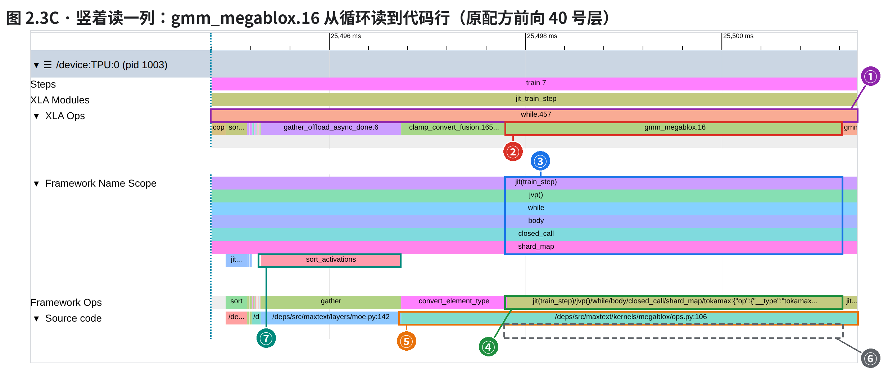
| # | 是什么 | 怎么看出来（框按 xplane 事件起止和 DOM 行位置画） |
|---|---|---|
| ① | 最上层：while.457 | 前向那个大循环本身：起 24,125.829、长 2,704.03 ms，一圈一层、78 圈；这一屏只有 6.6 ms，所以它从左边伸进来、从右边伸出去，看不到两头。它是容器：下面一层落在它的时间范围里 |
| ② | 下一层：叶子 gmm_megablox.16 | 25,497.811 ms 起、3.425 ms 长。它下面再没有块了：不再压着别的块的那一块才是一条指令的一次执行（叶子）。时长只数这一层，while.457 的 2,704 ms 已经包含了它，再加就重复了 |
| ③ | Framework Name Scope：名字路径 | jit(train_step) → jvp() → while → body → closed_call → shard_map：从叶子的 tf_op 拆出来的路径，一段一层，上一段包下一段。jvp() ＝ 前向（反向是 transpose(jvp())），while／body ＝ scan 循环体，shard_map ＝ 每张卡各算各的那一段。第几圈（第几层）它不分 |
| ④ | Framework Ops：叶子的 tf_op | 这一格印的是整串 tf_op：前半截就是 ③ 的路径，后面 tokamax:{…} 是 kernel 的名字和配置（Pallas 写的专家矩阵乘）。左边邻居只印了 gather、convert_element_type 这样的操作名 |
| ⑤ | Source code 上层：哪一行 Python | /deps/src/maxtext/kernels/megablox/ops.py:106：叶子 Details 里的 source（源码栈最里一帧）。相邻叶子同一行代码就并成一块，所以它比 ② 宽：左边从 clamp_convert_fusion.165（FP8 量化）起，右边接着 gmm_megablox.17 伸出屏外。量化是 gmm 入口里做的 |
| ⑥ | Source code 下层：这里是空的 | Source code 自己也按时间叠层：带 source 的容器占上层，它里面的叶子落到下层（图 2.3D 那三个小 while 就是这样）。while.457 没有 source、也没有 tf_op，所以 ③④⑤ 里都没有它那一层，这一列的下层空着 |
| ⑦ | 左边邻居多一层：sort_activations | gather_offload_async_done.6（1.43 ms）的路径比 gmm 多一段 sort_activations，Source code 指到 /deps/src/maxtext/layers/moe.py:142：MoE 按专家给 token 排队那一步。一片碎块往往同属一个模块，竖着读一眼就知道 |
⭐ 上下叠 ＝ 包含：XLA Ops 在 profile 里只有一行事件，是 XProf 按「谁的时间范围包住谁」叠出了两层。时长只数最底下那块：下面不再压着别的块的，是一条指令的一次执行，叫叶子；
上面那层是容器（这里是前向大循环 while.457），宽度已经包含了下面所有叶子。最下面三行是这片叶子的名字路径、tf_op（JAX 记下的「这条指令是哪段代码的哪个操作」）和代码行，不是又叠了几层。
拿这个读法看 ⑦：左边邻居 gather_offload_async_done.6 的路径比 gmm 多一段 sort_activations，代码行指到 maxtext/layers/moe.py:142：
它属于 MoE 按专家给 token 排队那一步。一片看不出名字的碎块，竖着读往往同属一个模块。
多数 HLO 指令在硬件上是一整块执行的：fusion 编成一个 kernel，sort、reduce 带的子计算只是「两个数怎么比、怎么加」的规则，也编进同一个 kernel。
只有 while 在运行时一圈一圈执行循环体，循环体里每条指令各记一个事件，于是在它下面叠成子层。JAX 的 lax.scan、fori_loop、while_loop
都编成 while，库函数内部用了 scan 也一样；Python 的 for 在编译时就展开了，不留 while。
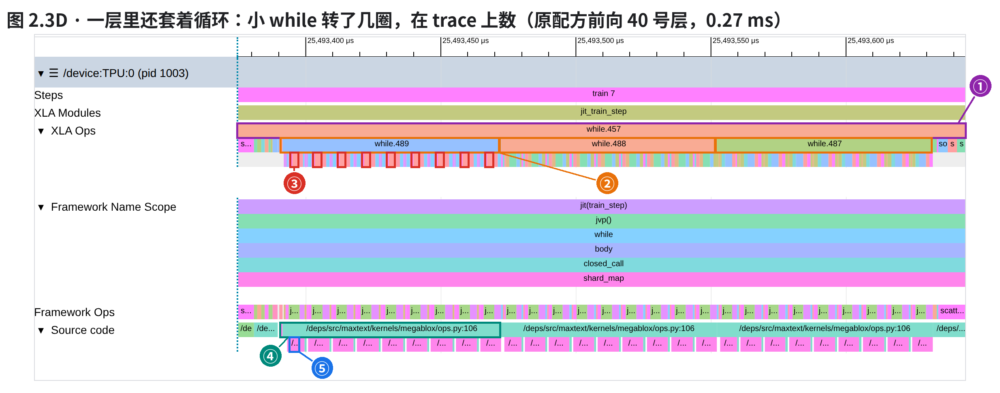
| # | 是什么 | 怎么看出来（框按 xplane 事件起止和 DOM 行位置画） |
|---|---|---|
| ① | 第一层：while.457 | 前向大循环：底下第一块 prepare_start_all-gather.570… 在它里面出现 78 次 ＝ 78 圈（前向 1–78 号层）。反向 while.453 同样数出 78 圈 |
| ② | 第二层：三个小 while | while.489／488／487，各约 80 µs，紧挨着排在三个专家矩阵乘之前。它们是第二层的容器，不是叶子 |
| ③ | 第三层：循环体一圈一次 | 任取子层里一块数它出现几次：框的是好认的 gather_fusion.22，在 while.489 底下出现 9 次（框了 9 个）；子层第一块 copy.2136 也是 9 次。子层就是循环体按顺序排开，一圈重复一次 → 转了 9 圈。这一步 936 个小 while 全是 9 圈、各 72 个叶子 |
| ④ | Source code 上层：容器自己的 source | megablox/ops.py:106：小 while 带 source，起止和 ② 一样，占了上层 |
| ⑤ | Source code 下层：叶子各自的 source | 叶子的出处读下层；上层那一块只说明这个 while 整体是从哪一行来的 |
gather_fusion.22），数它在这个 while 底下出现几次，比如第一块：while.489 底下 copy.2136 出现 9 次 ＝ 9 圈；
前向 while.457、反向 while.453 用同样的数法都是 78 圈。op_name 是 jit(_searchsorted_scan_impl)，在 tokamax 专家矩阵乘的入口里：按专家给 token 找位置的 jnp.searchsorted，
它默认用 scan 做二分查找，圈数 ＝ ⌈log₂(n＋1)⌉（JAX 源码 jax/_src/numpy/hijax.py）。这个 while 的状态里有一个 f32[449]，
代入 n ＝ 449 正好 9 圈，和 trace 上数的一样 [推断：这个 f32[449] 就是被搜的数组]。source（④，起止和容器一样），里面的叶子落到下层（⑤）。叶子的出处只读下层。上面那张图里 while.457 既没有 source 也没有 tf_op，所以那一列的下层空着（⑥）。fp8old，view_start=25,494.812、view_end=25,502.237；Expand All 后 TPU:0 下面的 Framework Name Scope、Framework Ops、Source code 都展开着，单击 gmm_megablox.16 在 Details 里对 tf_op、source。fp8old，view_start=25,493.375、view_end=25,493.645（0.27 ms，名字挤成 ga，单击读全名）。⭐ 改后的 40 号层里，小核上收 192 个专家的 all-gather 不见了，反向的专家梯度 reduce-scatter 也不见了；专家矩阵乘从 10.1 ms 缩到 0.1 ms。
一步 11.76 s 太宽，名字都挤没了，要放大到一层（几十毫秒）才认得出算子；从一步按 W 放大 300 多倍会漂，链接里直接写窗口最稳（现场打开）。
两份取同一层（40 号）、同窗宽，左端各自对齐这一层的起点。
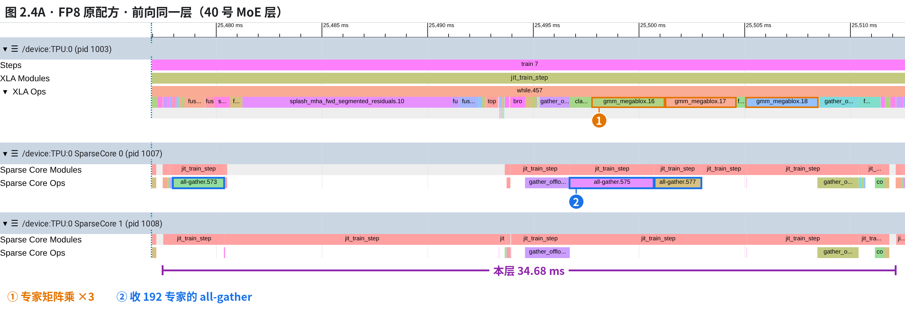
| # | 是什么 | 怎么看出来（事件名、时刻都从 xplane 读） |
|---|---|---|
| ① | 专家矩阵乘 ×3 | TC：本层 3 个专家矩阵乘（gmm／tgmm）合 10.11 ms：3.43／3.33／3.35 ms 主图里是 2 个框： gmm_megablox.16＋gmm_megablox.17（25,497.812 ms 起，3.425／3.328 ms）；gmm_megablox.18（25,505.087 ms 起，3.354 ms） |
| ② | 收 192 专家的 all-gather | SC0：收 192 个专家权重的 all-gather 573／575／577：2.38／3.98／2.21 ms，形状 f8e4m3fn[1,192,4096,1536] 等 主图里是 2 个框： all-gather.573（25,477.978 ms 起，2.380 ms）；all-gather.575＋all-gather.577（25,496.737 ms 起，3.981／2.209 ms） |
| 括号 | 本层 34.68 ms | 窗口＝本层，左右各留 0.5 ms；改后那张同窗宽，左端对齐它自己的这一层 |
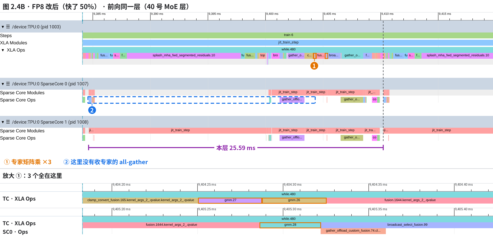
| # | 是什么 | 怎么看出来（事件名、时刻都从 xplane 读） |
|---|---|---|
| ① | 专家矩阵乘 ×3 | TC：本层 3 个专家矩阵乘（gmm／tgmm）合 0.11 ms：0.04／0.04／0.04 ms，框只有几个像素宽（原配方同一层 10.11 ms） 主图里是 2 个框： gmm.27＋gmm.26（9,404.251 ms 起，0.037／0.037 ms）；gmm.28（9,405.287 ms 起，0.035 ms） |
| ② | 这里没有收专家的 all-gather | 虚线：本层开头到第一个 gmm 之前，原配方的 ② 落在这一段；这里 SC0 上没有收专家权重的 all-gather，只剩 5 条别的小 all-gather（都不是 [1,192,…] 整套专家，每条 ≤0.18 ms）和 gather_offload（按路由收 token） |
| 放大 1 | 9,404.18–9,404.42 ms 窗 | gmm.27（0.037 ms）、gmm.26（0.037 ms）；这段时间 SC0 没有事件，所以没有它那一行 |
| 放大 2 | 9,405.18–9,405.42 ms 窗 | gmm.28（0.035 ms） |
| 括号 | 本层 25.59 ms | 灰虚线：本层结束，右边已是下一层（A/B 两张同窗宽 ＝ 原配方那一层的宽度） |
all-gather 在这里干的事：每张卡只存 192 个专家的 1/64，用到时从 64 张卡收齐。原配方三条形状是 f8e4m3fn[1,192,4096,1536] 这类——首维 192 就是 192 个专家整套。
改后那一段空着：只剩几条很小的 all-gather（没有一条是 192 个专家的）和按专家搬 token 的 gather_offload。
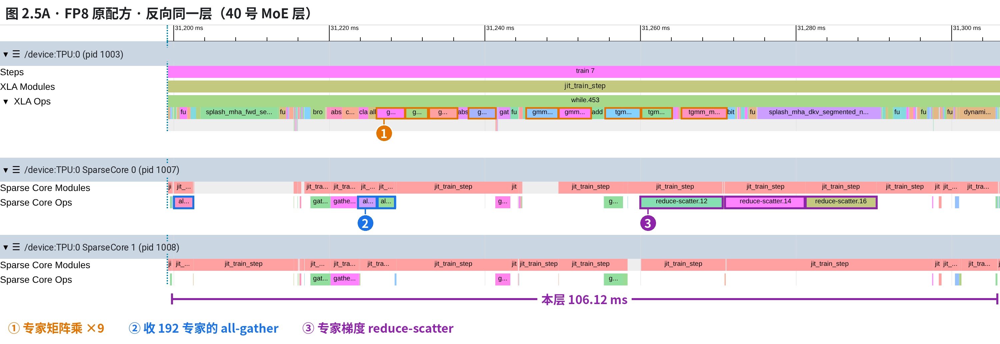
| # | 是什么 | 怎么看出来（事件名、时刻都从 xplane 读） |
|---|---|---|
| ① | 专家矩阵乘 ×9 | TC：本层 9 个专家矩阵乘（gmm／tgmm）合 35.69 ms 主图里是 5 个框： gmm_megablox.14＋gmm_megablox.13＋gmm_megablox_transpose_rhs.10（31,226.184 ms 起，3.530／2.982／3.631 ms）；gmm_megablox.15（31,237.982 ms 起，3.357 ms）；gmm_megablox_transpose_rhs.12＋gmm_megablox_transpose_rhs.11（31,245.398 ms 起，4.050／4.043 ms）；tgmm_megablox.10＋tgmm_megablox.11（31,255.554 ms 起，4.522／3.911 ms）；tgmm_megablox.12（31,265.379 ms 起，5.660 ms） |
| ② | 收 192 专家的 all-gather | SC0：收 192 个专家权重的 all-gather 543／547／545：2.37／2.41／2.21 ms，形状 f8e4m3fn[1,192,4096,1536] 等 主图里是 2 个框： all-gather.543（31,200.121 ms 起，2.370 ms）；all-gather.547＋all-gather.545（31,223.777 ms 起，2.406／2.207 ms） |
| ③ | 专家梯度 reduce-scatter | SC0：专家梯度 reduce-scatter 12／14／16：10.45／10.25／9.13 ms，形状 bf16[3,4096,1536] 等 主图里是 2 个框： reduce-scatter.12（31,260.076 ms 起，10.447 ms）；reduce-scatter.14＋reduce-scatter.16（31,270.953 ms 起，10.246／9.134 ms） |
| 括号 | 本层 106.12 ms | 窗口＝本层，左右各留 0.5 ms；改后那张同窗宽，左端对齐它自己的这一层 |
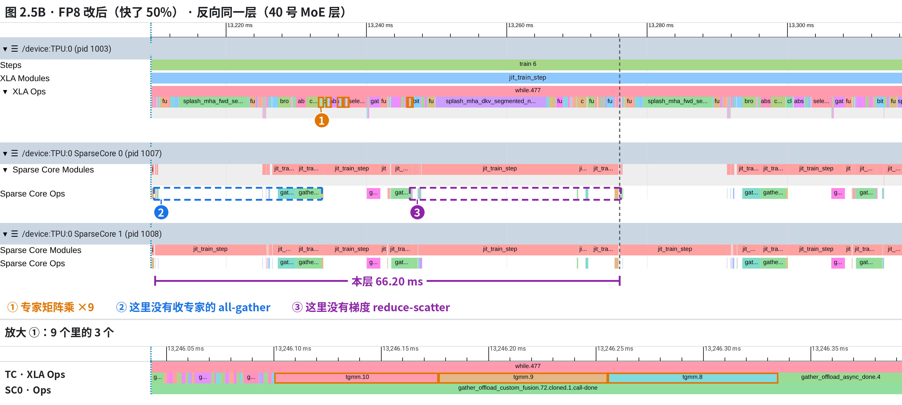
| # | 是什么 | 怎么看出来（事件名、时刻都从 xplane 读） |
|---|---|---|
| ① | 专家矩阵乘 ×9 | TC：本层 9 个专家矩阵乘（gmm／tgmm）合 0.47 ms；每个 0.03–0.08 ms，框只有几个像素宽（原配方同一层 35.69 ms） 主图里是 5 个框： gmm.20（13,233.506 ms 起，0.060 ms）；gmm.22＋gmm.21（13,234.596 ms 起，0.037／0.037 ms）；gmm.25（13,236.223 ms 起，0.035 ms）；gmm.24＋gmm.23（13,237.125 ms 起，0.036／0.036 ms）；tgmm.10＋tgmm.9＋tgmm.8（13,246.101 ms 起，0.076／0.079／0.079 ms） |
| ② | 这里没有收专家的 all-gather | 虚线：本层开头到第一个 gmm 之前，原配方的 ② 落在这一段；这里 SC0 上没有收专家权重的 all-gather，只剩 5 条别的小 all-gather（都不是 [1,192,…] 整套专家，每条 ≤0.16 ms）和 gather_offload（按路由收 token） |
| ③ | 这里没有梯度 reduce-scatter | 虚线：tgmm 算完专家梯度以后到本层结束，原配方的 ③ 落在这一段；这里 SC0 上一条 reduce-scatter 都没有，只有 3 条 all-reduce（最长 0.56 ms）和 4 条小 all-gather |
| 放大 1 | 13,246.04–13,246.39 ms 窗 | tgmm.10（0.076 ms）、tgmm.9（0.079 ms）、tgmm.8（0.079 ms） |
| 放大图只取了一部分 | ① 一共 9 个，放大图里框出 3 个；其余几个同样每个只有几十微秒，见 ① 那一行 | |
| 括号 | 本层 66.20 ms | 灰虚线：本层结束，右边已是下一层（A/B 两张同窗宽 ＝ 原配方那一层的宽度） |
reduce-scatter 是 all-gather 的反方向：算完的梯度先在 64 张卡之间求和，每张卡只留自己那份。原配方反向三条形状是 bf16[3,4096,1536]——每张卡留 3 个专家的梯度（192 ÷ 64 ＝ 3）。改后反向一条都没有。
两组截图只框出了最长的那几条。把 40 号层小核上的集合通信一条不漏、按先后排出来，看少掉的是不是只有这两类：
📌 窗口：40 号层，前向 fp8old 25,477.463–25,512.140、fp8new 9,384.636–9,410.223 ms；反向 fp8old 31,199.767–31,305.887、fp8new 13,209.876–13,276.078 ms（距 profile 起点，和图 2.4、2.5 同窗）。取 TPU:0 两颗小核 Sparse Core Ops 行上名字带 all-gather／reduce-scatter／all-reduce 的执行条；两颗小核上同名的 all-reduce 只算一条。
📌 哪一条是哪个权重，按形状对配置认：[1,4096,64,128]、两条 [1,4096,8,128]、[1,64,128,4096] ＝ 注意力（64 个查询头、8 个 KV 头、每头 128）；[1,4096,192] ＝ 路由器（192 个专家）；[1,4096,1536] ×2、[1,1536,4096] ＝ 共享专家（1 个，中间维 1,536）；[1,192,4096,1536] ×2、[1,192,1536,4096] ＝ 专家权重收齐。全部是 f8e4m3fn。
📌 求和的范围从最终 HLO 的 replica_groups 读：⑤ reduce-scatter 按 {'fsdp'}（64 份）；⑦ 专家梯度 all-reduce（原配方 all-reduce.384、改后 .394，形状 bf16[3,4096,1536] ×2 ＋ [3,1536,4096]）按 {'data'}（2 份）；⑥ 三条（路由器 f32[4096,192]、注意力、共享专家）是全部 128 个 device。
📌 改后反向多一条路由器权重的 all-gather（.499，0.085 ms）：同一份权重在重算和求梯度时各收一次，编译器排程和原配方不同 [推断]。主核上的 4 条同步 all-reduce：原配方 all-reduce.306／307／308／312，改后 .316／317／318／322（f32[192] 和几条 bf16 小向量）。
| # | 收或求和的是什么 | 形状（f8e4m3fn 收齐后／bf16 梯度） | 一层里的条数：原配方 → 改后 |
|---|---|---|---|
| ① | 注意力的四份权重（q、k、v、输出） | [1,4096,64,128]、[1,4096,8,128] ×2、[1,64,128,4096] | 前向 4 → 4，反向 8 → 8 |
| ② | 路由器权重 | [1,4096,192] | 前向 1 → 1，反向 1 → 2 |
| ③ | 共享专家的三份权重 | [1,4096,1536] ×2、[1,1536,4096] | 前向 3 → 3，反向 3 → 3 |
| ④ | 192 个专家的权重 | [1,192,4096,1536] ×2、[1,192,1536,4096] | 前向 3 → 0，反向 3 → 0 |
| ⑤ | 专家梯度 reduce-scatter | bf16[192,…] → [3,…] | 反向 3 → 0 |
| ⑥ | 注意力、路由器、共享专家的梯度求和（全部 128 个 device） | all-reduce 三条 | 反向 3 → 3 |
| ⑦ | 专家梯度求和（data 轴 2 份） | bf16[3,4096,1536] ×2、[3,1536,4096] | 反向 1 → 1 |
除了 ④ ⑤，其余几类两份对得上；两份程序里也没有一条 all-to-all：token 不出卡，按专家搬 token 的 gather_offload 是小核在本卡里搬。
新冒出一个疑点：⑦ 两份都有，原配方是先 ⑤ 在 64 份之间求和、再 ⑦ 在 2 份之间求和；改后没有 ⑤，专家梯度只在 2 份之间求了和。先记下，第四节回到程序里看。
⭐ 放大到一层，XLA Ops 第二层是一长串叶子，大的几块认得出名字，其余挤成一片细条。要不要一块块点开？
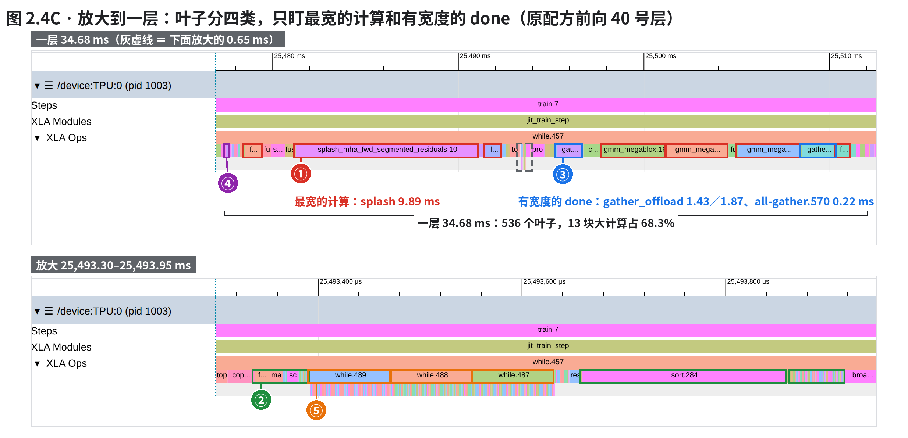
| # | 是什么 | 怎么看出来（按 xplane 事件名分类；计数、毫秒由 r12-trace.py 现算） |
|---|---|---|
| ① | 大块计算 | Pallas kernel（注意力 splash_mha… 9.89 ms、三个专家矩阵乘 gmm_megablox.16／17／18 各 3.3–3.4 ms）和编译器生成的矩阵乘 convolution fusion（9 个，框了最宽的 3 个）。这一类 13 个、23.70 ms、占本层 68.3% |
| ② | 很窄的小计算（放大窗） | 逐元素、类型转换、norm、路由里的比较和排序、切片：loop fusion、reduce-window、slice、sort 这些。一类 315 个、6.79 ms、占本层 19.6%；其中不到 0.1 ms 的叶子全层有 504 个（四类都算），合计才 0.98 ms（2.8%）。放大窗里最宽的是 sort.284（0.201 ms，中间那个绿框） |
| ③ | 搬数据 | gather_offload_async_done.6／.7：主核停在这里等小核按专家把 token 搬好（1.43／1.87 ms）。这一类还有 copy-start／copy-done、copy 这类换数据摆法（data formatting；放大窗左端那块 copy.2030 就是）、scatter_offload 等，165 个、3.97 ms、占本层 11.4% |
| ④ | 集合通信 | all-gather.570…call-done，0.22 ms：这一层里唯一有宽度的集合通信 done。名字带 all-gather／reduce-scatter／all-reduce 的叶子 43 个、0.22 ms、占本层 0.6%，几乎全是零宽的 start、done 和发令前后的配套指令 |
| ⑤ | 小 while（容器，不是叶子） | while.489／488／487，各约 80 µs：一层里面还套着循环，下面一层才是叶子（图 2.3D 数它们转了几圈） |
先把这一层的 536 个叶子按名字分成四类（① 大块计算、② 小计算、③ 搬数据、④ 集合通信，各是什么见上表；XLA 把矩阵乘也归在 convolution fusion 这一类，所以它算 ①），算算每类占多少：
| 40 号层 | 一层 ms | ① 大块计算 | ② 小计算 | ③ 搬数据 | ④ 集合通信 | 其中 <0.1 ms 的叶子 | 有宽度（≥1 µs）的 async done |
|---|---|---|---|---|---|---|---|
| 原配方前向 | 34.68 | 13 个、23.70 ms（68.3%） | 315 个、6.79 ms（19.6%） | 165 个、3.97 ms（11.4%） | 43 个、0.22 ms（0.6%） | 504 个、0.98 ms | 4 ／ 27 |
| 原配方反向 | 106.12 | 36 个、72.13 ms（68.0%） | 875 个、24.68 ms（23.3%） | 485 个、7.19 ms（6.8%） | 92 个、2.11 ms（2.0%） | 1403 个、3.42 ms | 14 ／ 63 |
⭐ 13 块大计算占 68.3%，504 个不到 0.1 ms 的细条合起来才 2.8%；27 个 async done 只有 4 个有宽度（其余宽度为 0，数据早到了）。只盯两样：最宽的计算、有宽度的 done。
所以三步走：顶层定位，单击大循环里的叶子看 tf_op，路径第二段是 jvp() 为前向、transpose(jvp()) 为反向；找最宽的计算（上表 ①）；找有宽度的 done（上表 ③ ④）。
碎块要知道归哪个模块，竖着读一列（图 2.3C 的读法）。trace 回答「在哪、谁挨着谁」；「这一类一步合计多少」读 Op Profile／Op Stats（第三节），别在 trace 上一块块加。
gmm／tgmm／splash 开头或类别是 convolution fusion 归 ①；
名字带集合通信的归 ④；copy-start／copy-done、类别 data formatting、名字带 gather_offload／scatter_offload／sparse-core-data-format 的，以及 dynamic-slice／dynamic-update-slice 的 start、done，归 ③（类别是 data formatting 的普通 copy 也在这一类）；其余归 ②。
名字带 prepare_ 的 custom-call 跟着它名字里的那次通信或搬运归类，宽度都不到 1 µs。copy-done（每个不到 1.1 µs）；有宽度的 async done 里只有 1 个是集合通信。
反向 63 个 async done 有 14 个过 1 µs，最宽的是 dynamic-slice-done 4.68 ms 和 2.5 那条 all-gather.548…call-done 1.18 ms。| 40 号层 | 一层 ms | ① 大块计算 | ② 小计算 | ③ 搬数据 | ④ 集合通信 | 其中 <0.1 ms 的叶子 | 有宽度（≥1 µs）的 async done |
|---|---|---|---|---|---|---|---|
| 改后前向 | 25.59 | 13 个、13.68 ms（53.5%） | 262 个、7.80 ms（30.5%） | 90 个、3.92 ms（15.3%） | 32 个、0.18 ms（0.7%） | 369 个、1.14 ms | 4 ／ 23 |
| 改后反向 | 66.20 | 36 个、37.27 ms（56.3%） | 872 个、25.56 ms（38.6%） | 485 个、2.71 ms（4.1%） | 72 个、0.66 ms（1.0%） | 1392 个、3.85 ms | 12 ／ 57 |
改后 ① 还是 13／36 块（名字照旧以 gmm 开头），但专家矩阵乘每颗只剩几十微秒，① 的占比从 68.3% 掉到 53.5%（前向）、68.0% 掉到 56.3%（反向）：分类表上看得出「同一类活变薄了」，看不出为什么，为什么要回到 2.4 和第三节。
fp8old，view_start=25,476.963、view_end=25,512.640（同 2.4）。fp8old，view_start=25,493.300、view_end=25,493.950；单击 sort.284、gather_offload_async_done.6（在一层那屏）读 Wall Duration。⭐ 改后同一层里小核少了两类通信，专家矩阵乘短到原来的 1/75–1/93：活少了一大块。少掉的 3.9 秒是不是全是这些没干的活，第三节拿总账对。
fp8old view_start=25476.963、view_end=25512.640 ↗ 打开；fp8new 9384.136–9419.813 ↗ 打开。改后放大窗：9404.183–9404.423 ↗ 打开、9405.183–9405.423 ↗ 打开。fp8old 31199.267–31306.387 ↗ 打开；fp8new 13209.376–13316.496 ↗ 打开；改后放大窗 13246.043–13246.393 ↗ 打开。gmm_megablox.16、小核上的 all-gather.575，在 Details 里读 Wall Duration（单位 ns）。⭐ 原配方每步主核停在通信 done 上一共只等了 161 ms（1.4%）：通信基本藏在计算底下，改后省掉的集合通信等待只有 119 ms，远不到 3.9 秒。
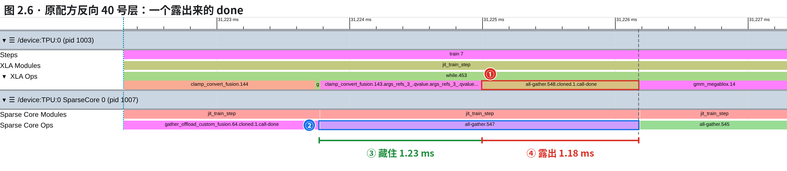
| # | 是什么 | 怎么看出来（事件名、时刻都从 xplane 读） |
|---|---|---|
| ① | TC 上的 done | TC：all-gather.548.cloned.1.call-done，31,225.002–31,226.183 ms，1.181 ms |
| ② | SC0 上的执行条 | SC0：all-gather.547（号比 TC 上小 1），31,223.777–31,226.183 ms，2.406 ms，形状 f8e4m3fn[1,192,4096,1536]——收 192 个专家权重的那种 |
| ③ | 藏住的一段 | SC 开搬到 TC 走到 done：1.225 ms，这段搬运和 TC 的计算同时进行 |
| ④ | 露出来的一段 | done 的宽度 1.181 ms：TC 停着，等 SC 搬完。竖虚线：两条右沿相差 0.1 µs |
静态图只给了结果。把这一条从发令开始放一遍：start 发令以后，小核这一行还在忙，547 晚了 4 毫秒多才开搬；主核这边一直在算，走到 done 时还差一截没搬完，就停下来等。
| 停 | 发生了什么 | 读数 |
|---|---|---|
| 1 | 0 ms 主核发令 start，接着往下算 | start 几乎没有宽度 |
| 2 | 小核这一行还在按专家搬 token（两条 gather_offload），547 到 4.27 ms 才开搬 | 4.27 ms 才开搬（前面两条为什么挡住它是 [推断：小核这一行一次只跑一条]） |
| 3 | 小核搬 547，主核同时在做量化 | 藏住 1.23 ms |
| 4 | 主核走到 done，547 还没搬完 | 露出 1.18 ms：done 右沿和 547 右沿差 0.1 µs |
| 5 | 放行后马上算 gmm_megablox.14 | 它的第 7 个操作数就是 all-gather.548 的 done（HLO） |
| 6 | 整步合计 | 主核停在通信 done 上 161.0 → 41.6 ms，省 119 ms，远不到 3.9 s |
all-gather.547 ↔ all-gather.548…call-done），并且两者右沿对齐：小核搬完的那一刻，主核的等待结束。这里两条右沿相差 0.1 µs。gather_offload，前一条结束后 3 µs 547 就开搬：像在排队 [推断：小核这一行一次只跑一条]。start 在 31,219.51 ms，在图 2.6 窗口左边外面（动画的零点）。fp8old，view_start=31222.3、view_end=31227.3 ↗ 打开；单击 all-gather.548.cloned.1.call-done，按 m 在标尺上标出它的区间，右沿正对小核上的 all-gather.547。第二节在同一层里看到：小核上收专家、散梯度的通信不见了，专家矩阵乘缩到原来的 1/75–1/93。一层只是 78 圈里的一圈。 整步少掉的 3.9 秒，是不是全落在这些没干的活上？换两张按总数统计的页面对账：Op Profile 按类别、Op Stats 按算子。
⭐ 一分钟走完：Op Profile 两份按类别 → 展开 custom-call 找到那颗 kernel → 单击读明细 → Op Stats 对排名和次数。
| 停 | 在哪一页、做什么 | 读出什么 |
|---|---|---|
| 1 | 原配方 Hlo Op Profile，Group by 选 Category | 整体 FLOPS 利用率 20.20%；custom-call 占 55.44% 的时间、利用率 53.39% |
| 2 | 改后同一页 | custom-call 时间占比 37.86%，利用率 117.45%，WASTED 0.0% |
| 3 | 单击 custom-call 展开 | 注意力三组 34–40%，和原配方一样；gmm.27 一组 5,147.80%、tgmm.8 一组 2,703.29% |
| 4 | 单击 gmm.27 那一行，读左栏 | 每次 49.31 µs、58.53 PFLOP/s：FP8 峰值的 25 倍 |
| 5 | 原配方同样展开 | 同一批专家矩阵乘每组占 2.4–8.8% 的时间、利用率 45–77% |
| 6 | 改后 Hlo Op Stats，名字过滤 gmm | 第一个专家矩阵乘排第 124；1,872 次；每次 94.5 µs |
| 7 | 原配方同样过滤 | 排第 4；同样 1,872 次；每次 5,692 µs |
原片 topic07-xrec-opprof.mp4（末帧 png）。下面按停拆开讲。
⭐ 少掉的时间几乎全在 custom-call 这一类：每步 6.5 秒 → 3.0 秒。可这一类的利用率不降反升，升到了 117.45%。
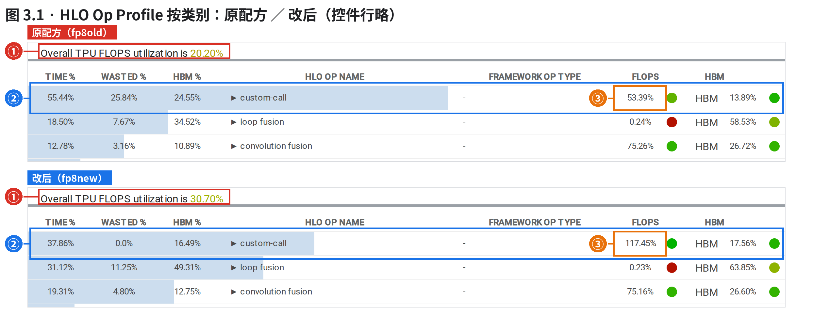
| # | 是什么 | 页面上读到什么（框按页面文字的位置画） |
|---|---|---|
| ① | 整体 FLOPS 利用率 | Overall TPU FLOPS utilization：原配方 20.20%、改后 30.70% |
| ② | custom-call 这一类 | Pallas kernel 这一类：TIME 55.44% → 37.86%（折成毫秒，Op Stats 同口径、8 个 TensorCore × 3 步平均：每步 6532.9 → 2969.9 ms）；WASTED 25.84% → 0.0%（浪费 ＝ 时间占比 ×（1 − max(FLOPS 利用率, HBM 利用率)），利用率过了 100% 就记成一点没浪费） |
| ③ | custom-call 的 FLOPS | 这一类的 FLOPS 利用率：53.39% → 117.45%，超过这页自己用的峰值 |
Hlo Op Profile 把主核上所有指令按类别归堆，每类给两样：TIME %（占主核时间的比例）和 FLOPS（这一类的利用率，下面细说怎么算）。 custom-call 是 XLA 不自己生成、直接调用的外部 kernel：这里就是用 Pallas 手写的 kernel，注意力（splash）和专家矩阵乘都在这一类（gmm 算前向和对输入的梯度，tgmm 算对专家权重的梯度，0.3 术语框）。 两份对比，custom-call 每步从 6,532.9 ms 掉到 2,969.9 ms（Op Stats 同口径，8 个 TensorCore × 3 步平均），一类就少了 3.6 秒，其他类加起来变化不大。
怪的是第三列：时间少了一半多，利用率从 53.39% 涨到 117.45%。利用率超过 100%，意思是这一类每秒做的运算比这页自己用的峰值还多。先别下结论，展开看是谁。
pl.CostEstimate，编译后存在 HLO 里叫 cost_estimate）。fp8old／fp8new，工具 op_profile：http://127.0.0.1:6311/?run=fp8old/2026_08_15_03_57_28&tag=op_profile&host=gke-node-1（改后把 run、时间戳换成 fp8new/2026_08_15_04_11_46）；左上角 ☰ 收起侧栏。⭐ 利用率是被两颗专家矩阵乘 kernel 拉上去的：gmm.27 一组每次 49.31 µs，算出来 58.53 PFLOP/s，是 FP8 峰值的 25 倍。没有芯片做得到：它根本没做完它报的那些活。
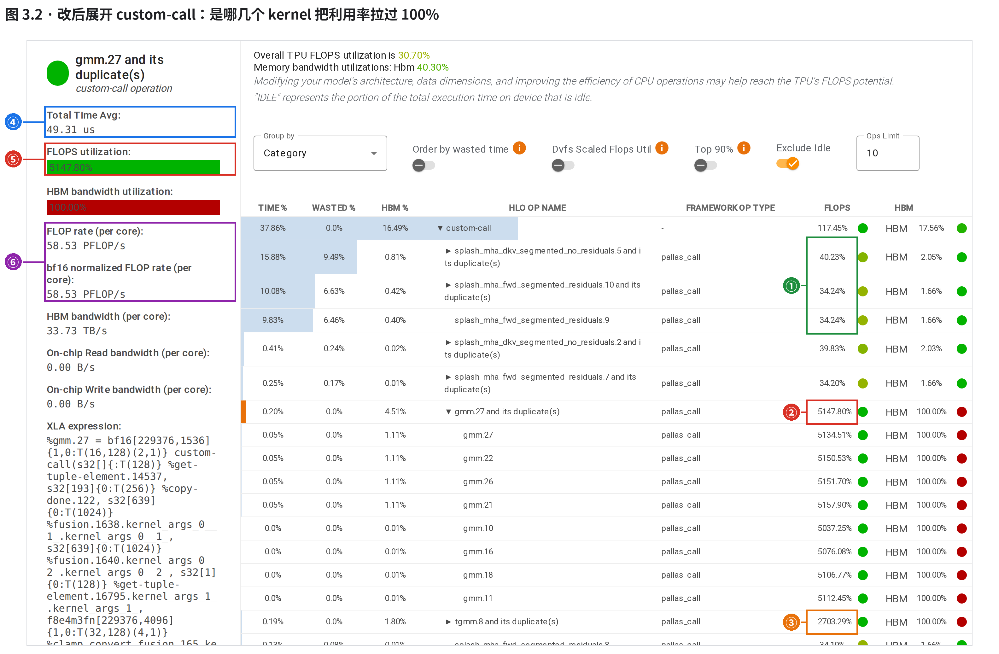
| # | 是什么 | 页面上读到什么（框按页面文字的位置画） |
|---|---|---|
| ① | 三个注意力 kernel | splash_mha_dkv／fwd 三组：FLOPS 40.23%、34.24%、34.24%，和原配方一样（原配方 Op Stats 里它们每次 15,788／9,886 µs，改后 15,773／9,885 µs） |
| ② | gmm.27 一组 | gmm.27 and its duplicate(s)：TIME 0.20%、FLOPS 5,147.80%（展开后同组 gmm.27／22／26／21 各 5,134–5,158%） |
| ③ | tgmm.8 一组 | tgmm.8 and its duplicate(s)：FLOPS 2,703.29% |
| ④ | Total Time Avg | 左栏：这一组每次平均 49.31 µs |
| ⑤ | FLOPS utilization | 左栏：5,147.80%；HBM bandwidth utilization 也是 100.00%（下一行读到 33.73 TB/s，HBM 峰值每核 3,433 GiB/s ≈ 3.69 TB/s——也不可能） |
| ⑥ | FLOP rate | 左栏：58.53 PFLOP/s ＝ kernel 自报每次 2.886 TFLOP ÷ 49.31 µs；bf16 normalized 也是 58.53：对 Pallas kernel 不按精度折算（两列相同） |
展开 custom-call：占时间大头的是三个注意力 kernel，利用率 34–40%，和原配方几乎一样。 真正离谱的是两行只占 0.2% 时间的专家矩阵乘：gmm.27 一组 5,147.80%，tgmm.8 一组 2,703.29%。117% 是平均数：一大块老实的注意力（约 37%）加上一小块离谱的专家矩阵乘（约 2,500%），平均出来过了 100%。
为什么说不可能。分子是 kernel 自报的：gmm.27 在编译后的程序里写着每次 2,886,218,022,912 FLOP ＝ 2 × 229,376 × 4,096 × 1,536——
229,376 行是这张卡上的 token（7 × 4,096）各选 8 个专家，4,096 和 1,536 是专家矩阵的两维。这个数只按输入形状算，不管实际算了几个专家。
分母是实测：每次 49.31 µs。一除就是 58.53 PFLOP/s。TPU v7x 官方 FP8 峰值每芯片 4,614 TFLOP/s，一芯片 2 个 TensorCore，每核 2307 TFLOP/s：差了 25 倍。
同一页上 HBM 也一样：左栏这组 kernel 的带宽 33.73 TB/s，每核 HBM 峰值 3,433 GiB/s（约 3.69 TB/s），差 9 倍。
换一张页面看同一颗 kernel：Roofline 页把每颗算子画成第一节屋顶线图上的一个点。真在干活的 kernel 最多贴着屋顶；gmm.27 画到了图外（录屏停 3）。
| 停 | 操作 | 看到什么 |
|---|---|---|
| 1 | 改后 Roofline 页，页顶 Device Information | 峰值每核 1,028.75 TFLOP/s；Time Scale Multiplier 1.10529（Op Profile 的峰值 ≈ 两者相乘） |
| 2 | 原配方，往下到 Section2，Operation 框输 gmm_megablox.16 | 一个蓝点贴着屋顶线的平顶；840,976 GFLOP/s，峰值的 81.7% |
| 3 | 改后同一处输 gmm.27 | 图里没有点：58,380,995 GFLOP/s 在平顶上方 57 倍，画到图外；表里 5,674.9%，内存带宽 912.6% |
| 4 | 只看表格那一行 | 58,380,995 ÷ 1,028,750 ＝ 56.7 倍；代码位置 MaxText backend.py（改后那条分支） |
⭐ 记账没少，活少了：两份 FP8 记在 custom-call 上的 FLOP 一模一样，时间却从 6,541.8 ms 缩到 2,972.8 ms。利用率 ＝ 一样的分子 ÷ 缩水的分母，117% 就是这么来的。
| 每步、每个 TensorCore | 原配方 | 改后 | 出处 |
|---|---|---|---|
| custom-call 记账的 FLOP（TFLOP） | 3,966.1 | 3,966.1 | hlo_proto 里 18 条 cost_estimate × TPU:0 每步次数 |
| 其中专家矩阵乘／注意力 | 2,762.1／1,204.0 | 2,762.1／1,204.0 | |
| custom-call 实测时间（ms） | 6,541.8 | 2,972.8 | TPU:0，3 步平均 |
| 页面上的利用率 | 53.39% | 117.45% | Op Profile |
| 一颗专家矩阵乘：每次时间 | 3,431.1 µs（gmm_megablox.16） | 48.6 µs（gmm.27） | 同上 |
| 自报 2.886 TFLOP ÷ 每次时间 | 841 TFLOP/s | 59,387 TFLOP/s | 算术 |
表里「一颗专家矩阵乘每次时间」是 TPU:0 上 3 步的平均（gmm.27 48.6 µs）；页面左栏 49.31 µs 是这一组在 8 个核上的平均，两种口径差 1–2%。
custom-call 那一行展开；再单击 gmm.27 and its duplicate(s)，左栏就是图里 ④⑤⑥。roofline_model，往下到 Section2，Operation 框输 gmm.27（原配方输 gmm_megablox.16）回车。⭐ 整步平均也被抬高了：Roofline 第 1 节原配方 43.4%，改后 65.2%。原因和 117% 一样：每步记的 FLOP 两份几乎一样（5,261 对 5,267 TFLOP），每步时长却缩到原来的 66.6%。扣掉专家矩阵乘这一族，剩下的部分 29.9% → 31.4%，几乎没动。
第一节画过屋顶线：横轴是算术强度（每搬 1 字节做几次运算），纵轴是每秒做了多少运算；左边一段斜线是带宽的上限，右边一段平顶是算力的上限，两段的交点就是第一节的拐点。 XProf 的 Roofline 页把同一张图画在 profile 上，分两节：第 1 节把整个程序当成一个点，第 2 节把最费时的前 1000 个算子各画成一个点。 纵坐标的分子是记账的 FLOP（和 Op Profile 同一个来源），分母是实测时长；所以 3.2 那颗 gmm.27 能画到图外，整步平均也逃不掉同一个问题。先看第 1 节，两份上下并排：
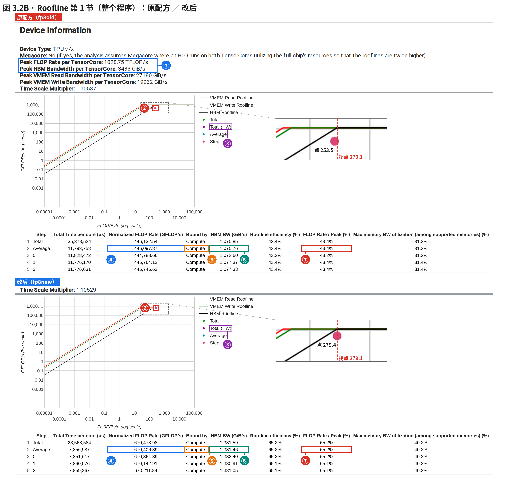
| # | 是什么 | 页面上读到什么（框按页面文字的位置画，图里的点按坐标轴换算） |
|---|---|---|
| ① | 峰值（分母） | 每个 TensorCore 1,028.75 TFLOP/s、HBM 3,433 GiB/s；两者相除就是拐点 279.1 FLOP/Byte（页面上 HBM Roofline 的拐点 279.085）。Time Scale Multiplier 原配方 1.10537、改后 1.10529（下面细账） |
| ② | 这一步落在哪 | 三个点叠在一起（Total、Average、每一步 Step）：横坐标原配方 253.5、改后 279.4 FLOP/Byte，就在拐点 279.1 旁边；纵坐标 446,098 → 670,406 GFLOP/s，往上抬了一截 |
| ③ | Total (HW) | 图例里有这一项，图上没有这个点，表里也没有这一行：这一行要整段的硬件计数器 FLOP 数（页面注释 (5)），开源 XProf 2.23.1 在这两份上都没给出来。只能用 Total／Average 两行 |
| ④ | Normalized FLOP Rate | Average 行（只算完整的步）：446,097.87 → 670,406.39 GFLOP/s。乘上每步时长 11.794 s ／ 7.857 s，每步每核记的 FLOP 是 5,261 ／ 5,267 TFLOP——几乎一样 |
| ⑤ | Bound by | 两份都是 Compute：XProf 取利用率更高的那一项（算力 43.4%／65.2% 对 HBM 31.3%／40.2%） |
| ⑥ | HBM BW | 1,075.76 → 1,381.46 GiB/s；÷ 3,433 ＝ 31.3% → 40.2%，就是最右一列 Max memory BW utilization |
| ⑦ | FLOP Rate / Peak | 43.4% → 65.2%：446,098 ÷ 1,028,750 ＝ 43.36%，670,406 ÷ 1,028,750 ＝ 65.17%。分子（每步记的 FLOP）没变，分母（每步时长）缩到 66.6%，比值就涨到 1.50 倍 |
Average 那一行只把完整的步平均（Total 把整段 profile 都算上，包括没抓全的步），读它。 Normalized FLOP Rate 是每秒记账的 FLOP；Bound by 是这一行算力和带宽谁更接近上限；FLOP Rate / Peak 就是它 ÷ 每核峰值 1,028.75 TFLOP/s。 两份都标 Compute，利用率从 43.4% 到 65.2%，看上去整步真变快了一大截。
先把分子算出来：每秒的 FLOP 乘上每步时长，原配方每步每核记了 5,261 TFLOP，改后 5,267 TFLOP，差 0.1%。活一样多、时间少了三分之一，利用率当然涨到 1.50 倍。 这和 3.2 的 117% 是同一个账：专家矩阵乘每颗按形状记 2.886 TFLOP，改后每颗的时间缩成几十微秒，记账没少。 把专家矩阵乘这一族从分子分母里都拿掉，剩下的活原配方每秒 29.9%，改后 31.4%——整步那 21.8 个百分点，几乎全是这一族带上来的。
| 每步、每个 TensorCore | 原配方 | 改后 | 怎么来的 |
|---|---|---|---|
| 记账的 FLOP（TFLOP） | 5,261 | 5,267 | Average 行 Normalized FLOP Rate × 每步时长 |
| 每步时长（ms） | 11,794 | 7,857 | Average 行 Total Time per core |
| FLOP Rate / Peak | 43.36% | 65.17% | ÷ 1,028,750 GFLOP/s，页面 43.4%／65.2% |
| 其中专家矩阵乘：FLOP／时长 | 2,762.1／3,665.7 ms | 2,762.1／98.3 ms | xplane 主核 3 个完整步（3.2 那张表） |
| 扣掉专家矩阵乘，剩下的 | 29.9% | 31.4% | (总 FLOP − 这一族) ÷ (总时长 − 这一族) ÷ 峰值 本课推导 |
bytes_accessed 合计（表里叫 Memory BW，每秒 1,638.91 GiB）；Bound by 用的是另一份按存储分区记的账里的 HBM 字节（表里的 HBM BW，每秒 1,075.76 GiB），按它算强度是 386.2，在拐点右边，算力利用率 43.4% 也高于 HBM 利用率 31.3%，所以标 Compute。两份字节账不是一个数，第 2 节的单颗 kernel 上也一样。xprof/convert/op_metrics_to_record.h 里的 SetRooflineMetrics（openxla/xprof，标签 xprof-v2.23.1），摘要如下：
operational_intensity = flops_v2 / bytes_accessed # 横坐标：自报的字节
hbm_bytes = 每条指令 memory_accessed_breakdown 里 HBM 那几项之和 # 没有这份账才退回 bytes_accessed
hbm_bw = hbm_bytes / time # 表里的 HBM BW
flops_utilization = measured_flop_rate / peak_flops
hbm_bw_utilization = hbm_bw / peak_hbm_bw
Bound by = 利用率最高的那一项（Compute、HBM；TPU 上有 CMEM、VMEM 的字节时也一起比）fp8old，工具 roofline_model：http://127.0.0.1:6311/?run=fp8old/2026_08_15_03_57_28&tag=roofline_model&host=gke-node-1；左上角 ☰ 收起侧栏，进来就是页顶 Device Information 和 Section1。fp8new/2026_08_15_04_11_46。鼠标停在点上会出提示框，读到同一行的数。⭐ 按算子看，原配方的点都老老实实：矩阵乘贴着平顶，逐元素的融合贴着斜线。离屋顶远的有两种「假点」：0 FLOP 的 done（根本画不出来）和 done 那一行超过 100% 的带宽。注意力 kernel 报了字节，它的 Bound by 可信。
往下到 Section2。每个点是一个算子，颜色是类别，表格按总时间排序、一页 10 行。原配方先看图形状，再看表头几名：
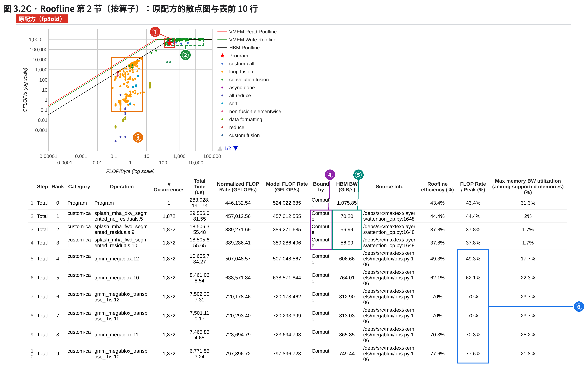
| # | 是什么 | 页面上读到什么（框按页面文字的位置画，图里的点按坐标轴换算） |
|---|---|---|
| ① | 红星：整个程序 | 和第 1 节同一个点（强度 253.5、446,133 GFLOP/s） |
| ② | 贴着平顶的一串 | 蓝点 custom-call（44 个，强度 240–3,210）和绿点 convolution fusion（XLA 自己的矩阵乘，134 个里 112 个标 Compute）挤在拐点右边、贴着平顶：按时长加权，custom-call 平均到峰值的 59.0%，卷积融合 83.2%。真在干活的矩阵乘就该在这里 |
| ③ | 贴着斜线的一片 | 橙点 loop fusion（逐元素的融合，435 个）：强度只有 0.08–4.6，425 个标 HBM，按时长加权用到 HBM 峰值的 61.3%——算得少、搬得多，只能靠少读写 |
| ④ | 表前三名：注意力 kernel | splash_mha_dkv／fwd（Pallas kernel）：Bound by Compute，FLOP Rate/Peak 44.4%／37.8% |
| ⑤ | 它们的 HBM BW | 70.20／56.99 GiB/s，不是 0：splash 在 cost_estimate 里报了字节（下面细账），所以这几颗的 Bound by 可以信 |
| ⑥ | 4–9 名：专家矩阵乘 | tgmm／gmm_megablox（Pallas）：FLOP Rate/Peak 49.3%–77.6%，都在 100% 以下；改后同一族的 gmm.27 是 5,674.9%（3.2 录屏停 3） |
convolution fusion 是 XLA 自己把矩阵乘和前后的小运算融成的一个算子，loop fusion 是一串逐元素运算融成的一个算子，custom-call 是 Pallas kernel。 矩阵乘那一串在拐点右边：做得多、搬得少，能做的就是逼近平顶，原配方按时长加权 custom-call 到峰值的 59.0%、卷积融合 83.2%。逐元素那一片强度不到 5：每个数搬进来只做几次运算，只能靠少读写。 这张图在原配方上的用处是排除：普通算子都已经贴着屋顶了，没有哪一类「明明能更快」。
接着两个读法。第一个是 done（第二节讲过：主核停在这里等一件异步的活做完，多数是小核上的搬运）：Category 只选 async-done，图上一个点都没有；第二个是注意力 kernel：Operation 框输 splash。
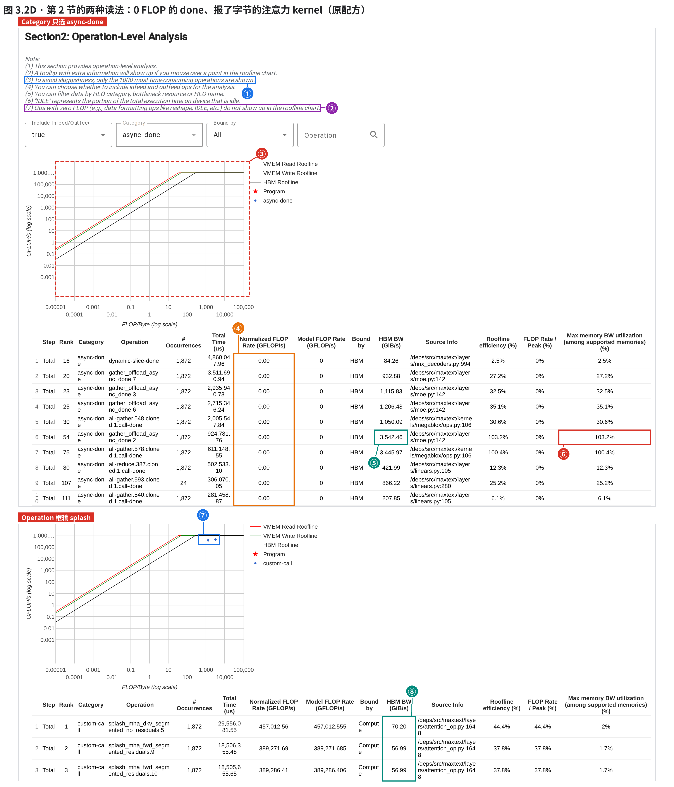
| # | 是什么 | 页面上读到什么（框按页面文字的位置画，图里的点按坐标轴换算） |
|---|---|---|
| ① | 只画前 1000 个 | 页面注释 (3)：第 2 节只取最耗时的前 1000 个算子。原配方主核一共 3,897 个算子，表里 999 行，按 self time 只截掉 0.21%（每核 74 ms／整段 35,379 ms）；所以按类别看占比，这里 custom-call 55.5% 和 Op Stats 全量的 55.4% 一样。开源 2.23.1 这页没有饼图 |
| ② | 0 FLOP 不上图 | 页面注释 (7)：FLOP 为 0 的算子不画点。前 1000 行里有 263 个 0 FLOP（loop fusion 78、data formatting 35、slice 34、async-done 32…），占整段时间 10.3% |
| ③ | 图是空的 | 只选 async-done，下面整张图一个点都没有：done 全是 0 FLOP |
| ④ | FLOP 0、Bound by HBM | 32 个 done 每一行都是 0.00 GFLOP/s、Bound by HBM：只剩带宽这一项非零，Bound by 就落到 HBM。done 是主核停在这里等一件异步的活做完（多数是小核上的搬运）——跳过，回 Trace Viewer 看它等了谁 |
| ⑤ | done 的 HBM BW | gather_offload_async_done.2：3,542.46 GiB/s，比峰值 3,433 还高 |
| ⑥ | 超过 100% | 103.2%：分子是这颗 done 名下按形状记的 1,879,048,192 字节，分母只是主核在 done 上等的那一小段（每次 494.0 µs），两个数不是一回事 |
| ⑦ | 两颗注意力 kernel 的点 | dkv（强度 3,210）和 fwd（1,304）两个蓝点都画得出来：kernel 报了字节，强度 ＝ FLOP ÷ 字节有值 |
| ⑧ | HBM BW 不是 0 | 70.20／56.99 GiB/s：Pallas kernel 的 Bound by 先看这一格是不是 0；这里不是，Compute 可信 |
三条读法（细节在上面两张表里）：done 跳过，它的 FLOP 是 0，带宽那一格也没意义（gather_offload_async_done.2 按形状记的字节 ÷ 主核在 done 上等的 494 µs ＝ 3,542.46 GiB/s，比 HBM 峰值还高），要回 Trace Viewer 看它在等谁（2.5）；
Pallas kernel 先看 HBM BW 是不是 0，作者没在 pl.CostEstimate 里填字节，Bound by 就只剩算力一项、标 Compute 不说明什么，本课这几颗都填了（两份 18 条 cost_estimate 没有一条字节是 0），splash 的 44.4%／37.8% 可以照字面读；
前 1000 个够不够：原配方主核一共 3,897 个算子，表里只有 999 行，按时间只截掉 0.21%（改后 0.31%），custom-call 占比 55.5% 对 Op Stats 全量 55.4%。小算子多的 profile 就不一定盖得住，看占比去 Op Stats 更稳。
bytes_accessed ÷ 每次时长，HBM BW ＝ xplane 里每条指令另带的一份按存储分区记的读写字节（memory_access_breakdown）里 HBM 那部分 ÷ 每次时长。现算和页面逐位一致：
splash_mha_dkv…5 自报 2,247,884,800 字节 → 132.60 GiB/s，HBM 账 1,190,133,764 字节 → 70.20 GiB/s；gmm_megablox.16 自报 5,664,411,648 → 1,537.13 GiB/s，HBM 账两项合计 2,852,140,804 → 773.97 GiB/s。点的横坐标用前一份（dkv 3,209.9 FLOP/Byte），Bound by 用后一份。cost_estimate 的 flops 和原配方一字不差，专家矩阵乘那几条的字节却有几条变小了（最小 1,681,922,048 字节，原配方最小 4,060,184,576）：输入形状变成 [3,…] 之后，按形状算的字节跟着变了，FLOP 的写法没有跟着变 [推断：按两份数值对照，没读 kernel 源码里这两项怎么算]。async-done；下：Category 改回 All，Operation 框输 splash 回车。表里的 Program ID 列可以不看（截图里隐藏了）。Utilization Viewer（按官方文档，画各执行单元忙了多少）在开源 2.23.1 上对任何 profile 都显示 No Data：这一版把它路由到一个没注册的处理器（日志 No ProfileProcessor registered for tool: utilization_viewer），2.23.2 已修。这 7 份里原料是有的（TPU 平面上的硬件计数器事件），本课截图用 2.23.1，就没用这一页。它想回答的「MXU 是不是真在跑 FP8」，本课改看 HLO 里 kernel 操作数的类型（Details 里的 f8e4m3fn[3,4096,1536]）和单颗 kernel 的 FLOP rate（3.2）。
⭐ 专家矩阵乘一次没少调（两份都是 1,872 次），只是每次从几毫秒变成几十到一百微秒；小核上的专家梯度 reduce-scatter 一条都没了。
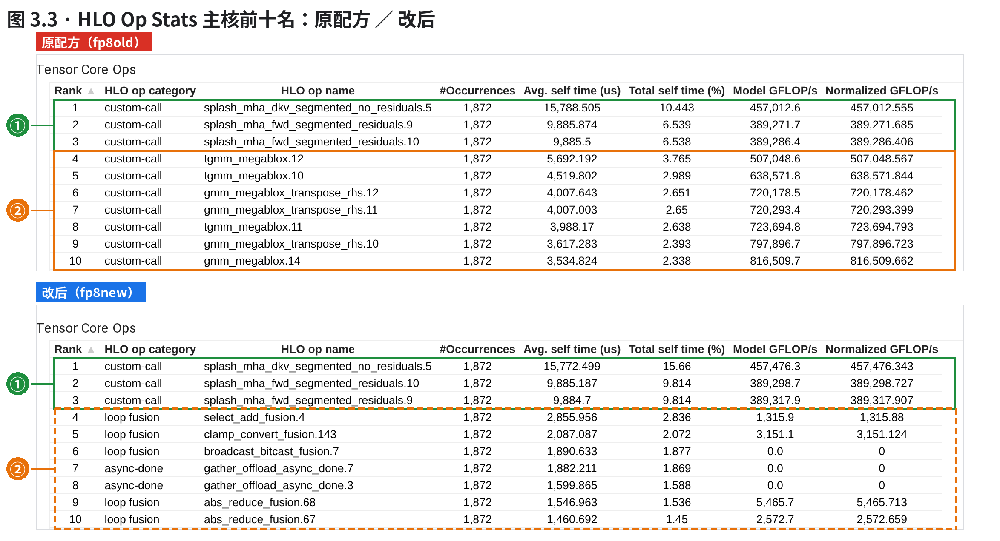
| # | 是什么 | 页面上读到什么（框按页面文字的位置画） |
|---|---|---|
| ① | 前三名：注意力 | 两份前三名都是 splash 注意力 kernel，每次 15,788／9,886／9,886 µs 对 15,773／9,885／9,885 µs——没变的活，时间也没变（对照组） |
| ② | 4–10 名：专家矩阵乘 | 原配方前十里 7 个是专家矩阵乘（tgmm_megablox／gmm_megablox_transpose_rhs／gmm_megablox），每次 3.5–5.7 ms；改后前十里一个都没有，第 4–10 名换成了 loop fusion 和 gather_offload 的 async-done，第一个专家矩阵乘 tgmm.8 排到第 124（图 3.4）。改后图里的 ② 是虚线框：同样的名次上，已经没有专家矩阵乘 |
Hlo Op Stats 是一张按算子排的大表：每个算子一行，给出现次数（#Occurrences）、每次的 self time（扣掉嵌套在里面的子指令后自己花的时间）、占比和 FLOP 速率。
原配方前十里 7 个是专家矩阵乘；改后前十里一个都没有，4–10 名换成了 loop fusion（XLA 把一串逐元素运算融成的一个算子）和按专家搬 token 的 gather_offload。
前三名注意力两份几乎一样：它是这张对照里没变的那一组，说明别的东西没动。
名字过滤 gmm，两份上下并排：
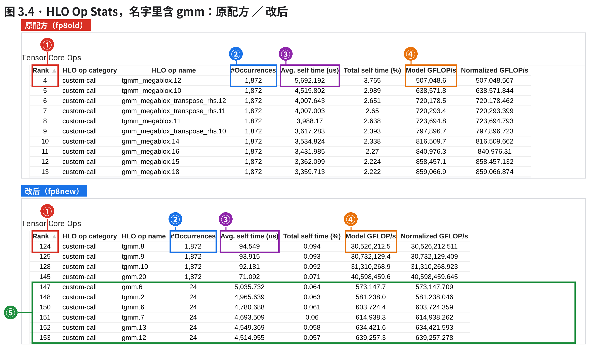
| # | 是什么 | 页面上读到什么（框按页面文字的位置画） |
|---|---|---|
| ① | Rank | 第一个专家矩阵乘排第几：原配方 4（tgmm_megablox.12）、改后 124（tgmm.8） |
| ② | #Occurrences | 两份都是 1,872 次 ＝ 78 圈 × 3 步 × 8 个 TensorCore（这台主机 4 颗芯片）：一次没少调 |
| ③ | Avg. self time | 每次 5,692.2 µs → 94.5 µs（第一行） |
| ④ | Model GFLOP/s | 507,049 → 30,526,213 GFLOP/s，即 507 TFLOP/s → 30.5 PFLOP/s：分子（自报的 FLOP）不变、分母（时间）缩了六十倍 |
| ⑤ | 每步只跑一次的几个 | 改后出现 24 次（每步每核 1 次，在 78 圈循环之外）的 gmm.6、tgmm.2…每次 4.2–5.0 ms、573–686 TFLOP/s：这几个没缩水（输出是 bf16[192,1536,4096] 这类带全部 192 个专家的形状）。是 MTP 那一层（4.6） |
次数一样，1,872 ＝ 78 圈 × 3 步 × 8 个 TensorCore（一台主机 4 颗芯片），每一圈都照常调了； 每次的时间从 5,692 µs 掉到 94.5 µs。Model GFLOP/s 列就是「自报 FLOP ÷ 每次时间」，所以跟着涨了六十倍，到 3,050 万 GFLOP/s（30.5 PFLOP/s）。 不是每个都缩水：改后每步只跑一次的那几个（⑤，在 78 圈循环外面）还是 4.2–5.0 ms、573–686 TFLOP/s，和原配方的同类 kernel 一个量级——它们是 MTP 那一层的专家矩阵乘（MTP：多 token 预测，主干后面多接的一层，用来多预测一个词），权重另走一条路收齐了（4.6）。
页底还有一张小核的表，过滤 reduce-scatter：
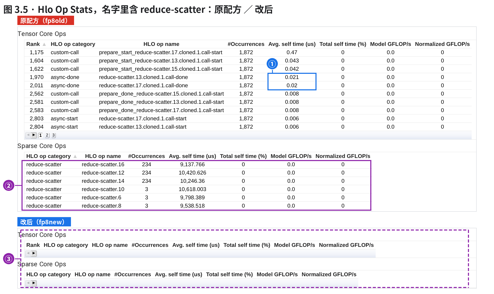
| # | 是什么 | 页面上读到什么（框按页面文字的位置画） |
|---|---|---|
| ① | 主核上的 done | 原配方主核表里 reduce-scatter.13／17….call-done 每次平均 0.021／0.020 ms：主核走到 done 时小核早就散完了——这几条通信本来就藏在计算底下 |
| ② | 小核上的执行 | 原配方小核表 6 条 reduce-scatter：.16／.12／.14 每条 234 次（＝ 78 圈 × 3 步，这张表只记一颗小核）、每次 9.1–10.4 ms，合计每步 2354.7 ms（trace 上按类型加总 2,354.0 ms）；.10／.6／.8 每条 3 次（每步 1 次，循环外） |
| ③ | 改后：两张表都空 | 改后同样过滤，主核表、小核表一条 reduce-scatter 都没有：专家梯度根本没有散回去 |
这张 Sparse Core Ops 表记的是小核上每条指令的执行，也就是第二节在 trace 里看到的那些通信本身。原配方六条专家梯度的 reduce-scatter：循环里三条（每步各 78 次）、循环外三条（每步 1 次），每次 9.1–10.6 ms，加起来每步 2,354.7 ms（trace 上按类型加总 2,354.0 ms）；改后两张表一条都没有。 原配方主核上对应的 done 每次只有 0.02 ms：这些通信本来就藏在计算底下（2.5 的结论），没了它们，主核的时间几乎省不下来——省下的大头还是在专家矩阵乘上。
= 按一下切到「包含」，输 gmm 才能把 gmm／tgmm 一起筛出来。hlo_stats（首页 Tools 里叫 HLO Op Stats）。表上方 Visible Columns 只勾 Rank、HLO op category、HLO op name、#Occurrences、Avg. self time、Total self time (%)、Model GFLOP/s、Normalized GFLOP/s：Program id 列是程序指纹，HLO op text 一行好几百字。= 切到包含，输 gmm 回车。图 3.5：同样输 reduce-scatter，往下滚到 Sparse Core Ops。⭐ 一步少了 3,916.1 ms：专家矩阵乘少了 3,570.5 ms，停在 done 上等的少了 485 ms，别处反而多花了一点。假设每卡只算了自己那 3/192，没干的专家矩阵乘该省 3,611 ms，两头对上了。
| TPU:0 中位步（ms） | 原配方 | 改后 | 少了 |
|---|---|---|---|
| 一步 | 11,758.2 | 7,842.1 | 3,916.1 |
| custom-call | 6,545.0 | 2,971.9 | 3,573.1 |
| 其中专家矩阵乘（gmm／tgmm，957 个） | 3,668.8 | 98.3 | 3,570.5 |
| 停在 done 上等（集合通信和 gather_offload 等异步搬运） | 969.0 | 483.6 | 485.4 |
| 逐元素算子（non-fusion elementwise） | 155.9 | 22.2 | 133.7 |
| loop fusion | 2,166.5 | 2,442.4 | -275.9 |
| 其余各类合计 | -0.2 | ||
一头是时间：少掉的 3,916.1 ms 里，91% 是专家矩阵乘少的（个数一样 957 个，时间少了 97%）。另一头是活：192 个专家分在 64 张卡上，每卡 3 个；假设改后每张卡只算了自己那 3 个，没干的就是 189/192——这个假设对不对，要到 HLO 里去看。原配方算全部 192 个花 3,668.8 ms，按「时间和专家数成正比」估，没干的那部分值 3,668.8 × 189/192 ＝ 3,611.5 ms [推断]，实际少了 3,570.5 ms，差 1%。
小核上没散的梯度、没收的权重（2,354 ms reduce-scatter、1,200 ms 左右 all-gather）不进这张账：它们本来就和主核的计算重叠，只体现在主核少等的那 485 ms 里（集合通信的 done 少了 119 ms，2.5 节；其余是 gather_offload 等别的异步 done，没再细拆）。 loop fusion 改后反而多了 276 ms：活少了，怎么还有一类变多？先记下这个疑点，第四节在 HLO 里找到了它（4.6）。
⭐ 少掉的 3.9 秒，九成是没算的专家矩阵乘。
⭐ 一份 profile 一步 375 秒，比原配方慢 31.9 倍。Op Profile 第一行就点了名：custom-call 占 98.49% 的时间、利用率 0.94%；Op Stats 前十全是专家矩阵乘，每次 0.37–0.42 秒。
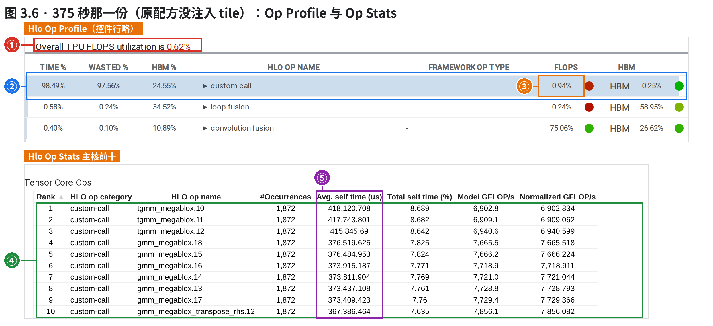
| # | 是什么 | 页面上读到什么（框按页面文字的位置画） |
|---|---|---|
| ① | 整体 FLOPS 利用率 | 0.62%（原配方 20.20%） |
| ② | custom-call 这一类 | TIME 98.49%、WASTED 97.56%：一步 375 秒，几乎全耗在 Pallas kernel 上 |
| ③ | custom-call 的 FLOPS | 0.94%（原配方 53.39%）：时间多了几十倍，记账的 FLOP 没变（三份 FP8 都是每步每核 3,966 TFLOP 记在 custom-call 上） |
| ④ | 前十名全是专家矩阵乘 | tgmm_megablox／gmm_megablox／gmm_megablox_transpose_rhs 包揽前十，次数照样 1,872 |
| ⑤ | 每次的时间 | 每次 367,386–418,121 µs，即 0.37–0.42 秒；原配方同一个 kernel 是 3.4–5.7 ms，慢了约 109 倍（gmm_megablox.16：373,915.2 ÷ 3,432.0 µs）；Model GFLOP/s 只有 7,719 |
这份是同一个原配方又跑了一次，配置文件一字不差，只是那次运行没把专家矩阵乘的 tile 大小注入进去，kernel 全用了默认的 128 × 128 × 128。
tile 是 kernel 每次搬进片上内存、一起算的那一块矩阵的大小：块太小，搬运和调度的开销盖过计算，算力大半闲着。编译后程序里这些 kernel 的配置全是 tile 128×128×128（7,511 处），原配方是 512×2048×1536 这一类。
结果每颗专家矩阵乘慢了约 109 倍（gmm_megablox.16：373,915 µs 对 3,432 µs），整步慢 31.9 倍。
两个病例放一起看同一张页面：改后，custom-call 时间少、利用率过了 100%：记的活比干的活多，去查谁没干活。375 秒那份，custom-call 时间占满、利用率不到 1%：活一点没少，干得极慢，去查 kernel 的配置。 读法是同一个：一类的时间占比和它的利用率放一起看，再展开到具体 kernel。
| 每步、每个 TensorCore | 原配方 | 改后 | 375 秒那一份 |
|---|---|---|---|
| custom-call 记账的 FLOP（TFLOP） | 3,966.1 | 3,966.1 | 3,966.1 |
| custom-call 实测时间（ms） | 6,541.8 | 2,972.8 | 369,525.1 |
| 页面上的利用率 | 53.39% | 117.45% | 0.94% |
一颗 gmm_megablox.16／gmm.27：每次时间 | 3,431.1 µs | 48.6 µs | 373,755 µs |
| 自报 2.886 TFLOP ÷ 每次时间 | 841 TFLOP/s | 59,387 TFLOP/s | 7.7 TFLOP/s |
三份记账的 FLOP 一模一样，差别全在分母上：改后的时间缩得离谱，375 秒那份的时间胀得离谱。
fp8tk：Op Profile 同 3.1（Group by ＝ Category）；Op Stats 同 3.3，不过滤，看主核表前十。⭐ 改后既不收 192 个专家的权重，也不散 192 个专家的梯度：显存账上该少掉一大块。少了吗？
时间的账在 3.4 对上了，显存是另一本账。原配方要把 192 个专家的权重收齐才能算，反向算出的梯度也是 192 个专家一整份，散回各卡之前得有地方放：
这样一块 bf16[192,4096,1536] 就是 2,304 MiB（192 × 4,096 × 1,536 × 2 字节）。改后真的没收没散，这些块都该不见，峰值该降下来好几 GiB。
XProf 里看显存有两页：Memory Profile 是运行时分配器的账，横轴是时间；Memory Viewer 是编译器给一个程序排的账，横轴是程序里第几条指令。先一停一停走一遍：
| 停 | 在哪一页、做什么 | 读出什么 |
|---|---|---|
| 1 | fp8old Memory Profile，进来就是 | 容量 94.74 GiB、窗口峰值 93.28 GiB、峰值时刻 1.4 ms；Stack 49.39 ＋ Heap 43.89 ＋ Free 1.46；三条线是平的 |
| 2 | Memory ID 下拉改成 1 | 峰值时刻 23,606.7 ms、93.23 GiB；默认的 0（TPU:0）多记了 128 次小分配，峰值落在窗口开头 |
| 3 | HLO Modules 上方「HLO's at time」填 23606.7 | 这一刻在跑的只有 jit_train_step（表里 8 行＝8 个 TensorCore，画面露出 7 行）；Memory Breakdown Table：stack 49.387、unused preallocated 43.846 GiB |
| 4 | 换到 Memory Viewer | 默认模块 jit_add，峰值 0.00 MiB：先换模块 |
| 5 | Hlo Modules 下拉选 jit_train_step | 峰值 91,766.56 MiB；入口参数 44,533.22；临时变量 47,230.39；横轴是 Program Order。页头 Module Name 还写着 jit_add（这一版不刷新），以左栏下拉框为准 |
| 6 | 往下到 HLO Ops at Peak，by Buffer Size 悬停最宽一根 | 5,688 MiB 的 f32[3,79,…]：参数或它的 nu（6 根一样宽，谁先谁后每次开页面会变） |
| 7 | 悬停第二根 | 另一种：nu 或 state['model'] 下的专家权重 |
| 8 | 悬停宽度减半的那几根 | bf16 的 mu，2,844 MiB；参数 ＋ nu ＋ mu ＝ 44,533 MiB |
| 9 | 同宽的下一根 | bitcast_convert_fusion.11：Temporary，没有 Framework Op，编译器插的 bf16 权重副本 |
| 10 | 再往右，2,304 MiB 那几根 | tgmm_megablox.10，bf16[192,4096,1536]：这一层 192 个专家的完整梯度。同形状一共 5 块、11.25 GiB：这一层 3 块，另 2 块是 MTP 层专家梯度的 all-reduce |
| 11 | fp8new 同一页 | 峰值 91,597.20 MiB；最宽三根换成输出头的 logits bf16[7,4096,120832]；峰值列表里没有 [192,…] 的梯度了 |
| 12 | bf16old 同一页 | 参数 param.329（wo）f32[192,79,1536,32]：192 个专家都在，4,096 那一维只剩 32；入口参数 22,271 MiB，FP8 的一半 |
原片 topic07-xrec-mem.mp4（海报是停 10 那一帧 png）。
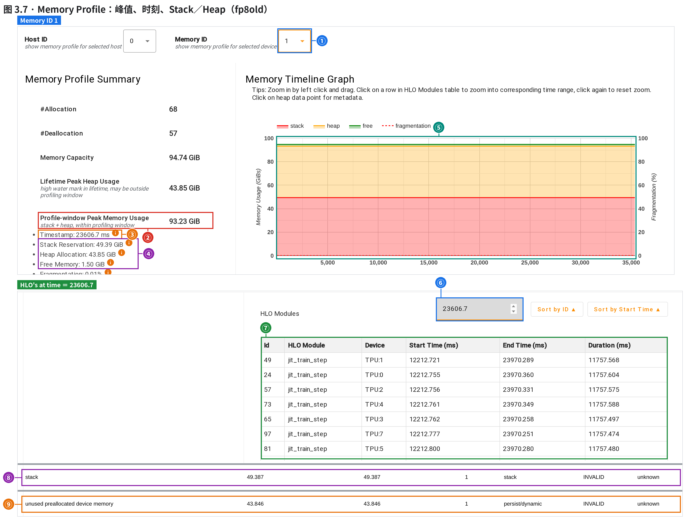
| # | 是什么 | 页面上读到什么（框按页面文字的位置、条形图里条的位置画） |
|---|---|---|
| ① | Memory ID | 默认是 0（TPU:0）：它多记了 128 次小分配（#Allocation 196 对 68），峰值时刻落在窗口开头的 1.4 ms，训练步 380 ms 才开始。换成 1；Memory ID 1–7 的数一样 |
| ② | 窗口峰值 | 93.23 GiB（Memory ID 0 是 93.28），容量 94.74 GiB，只剩 1.50 GiB |
| ③ | 峰值时刻 | 23,606.7 ms，落在 profile 的第二步里 |
| ④ | Stack／Heap／Free | 49.39 ＋ 43.85 ＋ 1.50 ＝ 94.74 GiB。Stack 是程序开跑时整块划出的工作区；Heap 是跨步常驻的数组（下面 ⑨） |
| ⑤ | 时间线 | 三条线从头到尾几乎是平的：显存一开跑就整块分好，程序里的涨落分配器看不见。这张图只能读峰值和余量 |
| ⑥ | HLO's at time | 填峰值时刻 23606.7，下面的模块表只留这一刻在跑的程序 |
| ⑦ | 这一刻在跑的 | 只有 jit_train_step。表里 8 行（8 个 TensorCore），画面里露出 7 行，TPU:6 那行要在表内往下滚；起止约 12,213–23,970 ms：峰值属于训练步这个程序 |
| ⑧ | stack | Memory Breakdown Table 的第一块：49.387 GiB，就是 ④ 的 Stack |
| ⑨ | unused preallocated | 第二块叫「unused preallocated device memory」，43.846 GiB：抓 profile 之前就分好的那块。名字叫 unused，大小却和 Memory Viewer 里的入口参数（参数＋优化器状态，44,533 MiB ＝ 43.49 GiB）只差 0.36 GiB [推断：参数和优化器状态在窗口开始前就分好了，分配器只记成一整块] |
三条线从头平到尾：训练程序一开跑就把要用的工作区整块划好（Stack），参数和优化器状态在抓 profile 之前就分好了（Heap），程序里的涨落分配器看不见。
峰值时刻只是一笔 512 字节的小分配落下的那一刻，拿它填 HLO's at time，确认这一刻在跑的是 jit_train_step 就够了。
原配方 93.23 GiB，改后 91.57 GiB：只少了 1.66 GiB。要看是谁占着，换到 Memory Viewer、选这个程序。
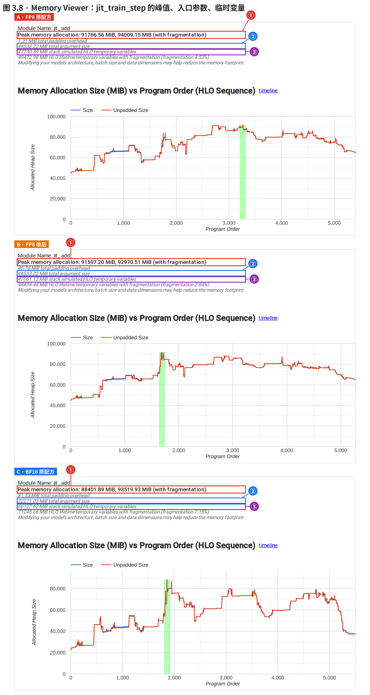
| # | 是什么 | 页面上读到什么（框按页面文字的位置、条形图里条的位置画） |
|---|---|---|
| ① | 峰值 | A 91,766.56 MiB（89.6 GiB）、B 91,597.20、C 88,401.89 MiB。只算这一个程序、按编译期排好的分配，比 Memory Profile 的运行时峰值小（3.6 正文、折叠块「两种峰值差在哪」）。页头 Module Name 还写着 jit_add：开源 2.23.1 换模块后不刷新这一行，以左栏下拉框选中的 jit_train_step 为准 |
| ② | 入口参数 | A、B 都是 44,533.22 MiB，C 22,271.03 MiB：BF16 正好一半（折叠块「入口参数为什么差一倍」） |
| ③ | 临时变量 | 峰值那一刻活着的临时变量：A 47,230.39、B 47,061.12、C 66,127.62 MiB。曲线横轴是 Program Order（第几条指令），不是时间；绿带是峰值那一段：A 在第 3,204–3,319 条，B 挪到了前面 |
页头三个数：峰值；入口参数，程序开跑时传进来的数组（参数、优化器状态、这一步的数据）；临时变量，程序跑的过程中自己分配、用完就还的 buffer（激活、收齐的权重、还没散的梯度）。 横轴 Program Order 是第几条指令，不是时间；绿带是峰值那一段：原配方在第 3,204–3,319 条，改后挪到了前面（第 1,687 条前后）。 两份的峰值只差 169 MiB。按上面估的，该省好几 GiB；峰值落的地方也换了。去看峰值那一刻是谁。
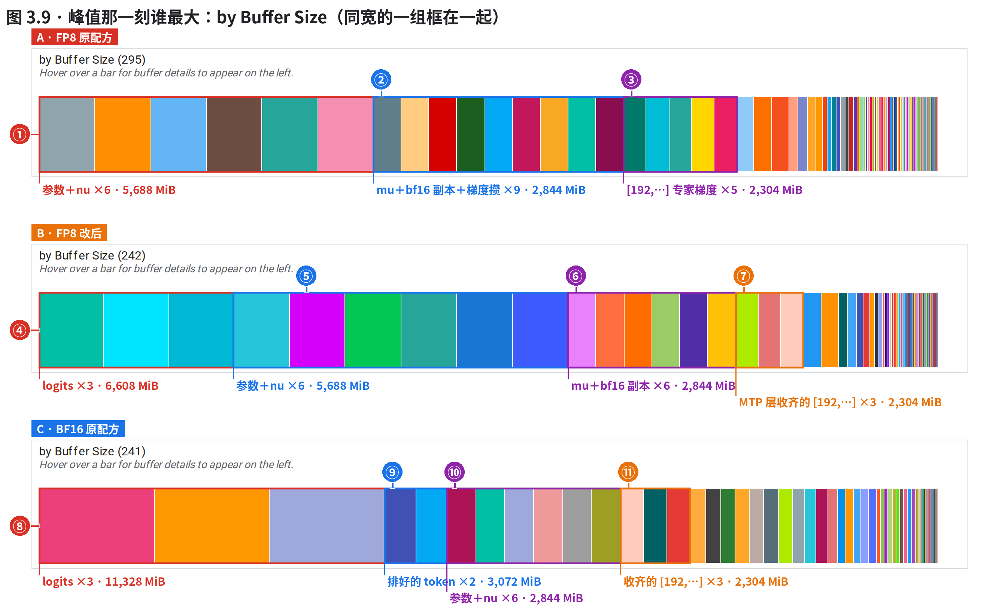
| # | 是什么 | 页面上读到什么（框按页面文字的位置、条形图里条的位置画） |
|---|---|---|
| ① | 参数 ×3 ＋ nu ×3（f32） | FP8 原配方：6 根 × 5,688 MiB。param.467、param.393、param.471、param.391、param.469、param.392 |
| ② | mu ×3 ＋ bf16 权重副本 ×3 ＋ 梯度攒 ×3 | FP8 原配方：9 根 × 2,844 MiB。bitcast_convert_fusion.11、broadcast.4714.clone、broadcast.4714.clone2、broadcast_in_dim.1367.clone、param.468、param.466 |
| ③ | [192,…] 专家梯度 ×5（循环内这一层 3 ＋ MTP 层 2） | FP8 原配方：5 根 × 2,304 MiB。all-reduce.358、tgmm_megablox.11、tgmm_megablox.10、tgmm_megablox.12、all-reduce.354 |
| ④ | logits ×3 | FP8 改后：3 根 × 6,608 MiB。multiply_convert_fusion.1、fusion.1176{1}、select_reduce_fusion.3{1} |
| ⑤ | 参数 ×3 ＋ nu ×3（f32） | FP8 改后：6 根 × 5,688 MiB。param.619、param.620、param.695、param.697、param.699、param.621 |
| ⑥ | mu ×3 ＋ bf16 权重副本 ×3 | FP8 改后：6 根 × 2,844 MiB。copy.2313、copy.2312、copy.2311、param.694、param.698、param.696 |
| ⑦ | MTP 层收齐的 [192,…] ×3 | FP8 改后：3 根 × 2,304 MiB。all-gather.537、all-gather.539、all-gather.538 |
| ⑧ | logits ×3 | BF16 原配方：3 根 × 11,328 MiB。multiply_convert_fusion.1、select_reduce_fusion.2{1}、fusion.1248{1} |
| ⑨ | 排好的 token ×2 | BF16 原配方：2 根 × 3,072 MiB。gather_offload_custom_fusion.81、gather_offload_custom_fusion.79 |
| ⑩ | 参数 ×3 ＋ nu ×3（f32） | BF16 原配方：6 根 × 2,844 MiB。param.403、param.327、param.329、param.328、param.405、param.407 |
| ⑪ | 收齐的 [192,…] ×3 | BF16 原配方：3 根 × 2,304 MiB。all-gather.578、all-gather.577、copy.1476.args_refs_4_.args_refs_4_ |
往下滚到 HLO Ops at Peak Memory Allocation Time：峰值那一刻活着的每块 buffer 一根条，by Buffer Size 从宽到窄排，鼠标悬停一根，左栏出它的名字、大小、形状、Framework Op（JAX 记下的名字路径）。逐根悬停，认出三类：
[3,79,…] 的 3，就是每张卡手里那 3 个专家。宽度减半的是 mu，存成 bf16。参数 17,813 ＋ nu 17,813 ＋ mu 8,906.5 ＝ 44,533 MiB，就是页头的入口参数。bitcast_convert_fusion.11 这类，左栏根本没有 Framework Op 一栏。HLO 里它的输入是 f32 的参数，输出是换了排布的 bf16：编译器为计算插的权重副本，代码里找不到这一行，改代码也改不掉它。同宽那组里另有三块 bf16[79,3,…] 的 broadcast（图 3.9 记作「梯度攒」）：形状是 79 层 × 每卡 3 个专家，op_name 落在反向 transpose(jvp()) 里。HLO 里这三块是反向循环（while）进门前用 0 填好的缓冲：循环每转一圈，把这一层 3 个专家的权重梯度按层号写进其中一格（dynamic-update-slice）——反向一边算一边攒，所以它们整个反向循环里一直占着。tgmm_megablox.10／11／12，形状 bf16[192,4096,1536]，Framework Op 带 transpose(jvp())/while/body：反向循环体里，这一层 192 个专家完整的权重梯度，还没 reduce-scatter 散回 3 个——就是 4.5 代码 ④ 里 psum_scatter 之前的那个 drhs。
同形状的还有 2 块 all-reduce.354／358：MTP 层专家梯度在全部 128 个 device 上求和，在循环外，结果一直留到优化器更新。一共 5 块、11.25 GiB，峰值就落在它们活着的时候。改后（B）同一页：最宽的三根换成了 bf16[7,4096,120832]，每块 6,608 MiB，是输出头的 logits：给每个位置、词表里每个词打的分（每卡 7 条序列 × 4,096 个 token × 词表 120,832）。
循环里那 3 块 [192,…] 梯度，在改后的峰值列表里一块都找不到：tgmm 直接吐出 [3,…]，这一层散梯度的那一步不存在了。
MTP 层的 all-reduce 改后照样有（all-reduce.364／366／368），只是这一刻不在峰值里；列表里剩下的 3 块 [192,…] 是 MTP 层收齐的权重，op_name 是 convert_element_type（4.2、4.6 会再碰到它）。
⭐ 省下的那几块确实不见了，可峰值只看最高的那一刻：反向那一段不再是最高点，最高点让给了输出头的 logits，所以峰值只少 169 MiB。显存账和时间账说的是同一件事：循环里没收、没散。
| 块 | 大小 | 里面是什么 | 怎么核的 |
|---|---|---|---|
| Heap | 44,899 MiB（43.85 GiB） | 跨步常驻的数组，抓 profile 之前就分好了（Memory Breakdown Table 里叫 unused preallocated device memory） | Memory Profile |
| ├ 专家和其余权重（f32） | 17,813.0 MiB | state['model']…，44 块 | Memory Viewer 入口参数按 Framework Op 分 |
| ├ Adam 二阶矩 nu（f32） | 17,813.0 MiB | state['optimizer']…['nu']… | 同上 |
| ├ Adam 一阶矩 mu（bf16） | 8,906.5 MiB | …['mu']…，存成 bf16 所以只有一半 | 同上 |
| ├ 数据批次和步数 | 0.6 MiB | data['inputs'] 等 | 同上 |
| └ 没对上 | 366 MiB | Heap 比入口参数多出的部分；Heap 在分配器里只记成一整块，profile 里没有按 buffer 拆开的明细 | 未核 |
| Stack | 50,573 MiB（49.39 GiB） | 程序开跑时整块划出的工作区：激活、临时收齐的权重、还没散的梯度、编译器插的副本、logits | Memory Profile |
| ├ 编译期排的临时区（含碎片） | 49,473.0 MiB | Memory Viewer 页头第四行「HLO lifetime temporary variables with fragmentation」 | Memory Viewer |
| └ 没对上 | 1,100 MiB | Stack 比编译期临时区多出的部分；Stack 是运行时整块预留，profile 里只有一个总数 | 未核 |
ici_fsdp_parallelism=64 × ici_data_parallelism=2：参数切 64 份，每份在 2 个 device 上各放一个，所以每个 device 拿 1/64，专家权重的形状是 [3,79,4096,1536]（按专家那一维切）。ici_fsdp_parallelism=-1，128 个 device 切 128 份，每个 device 拿 1/128，专家权重参数是 f32：wi_0／wi_1 是 [192,79,32,1536]，wo 是 [192,79,1536,32]（录屏停 12 悬停的 param.329 就是 wo；三个都按 4,096 那一维切，每份 32；这正是第五节说的「专家维没切开」）。入口参数 22,271 MiB，正好是 FP8 的一半。http://127.0.0.1:6311/?run=fp8old/2026_08_15_03_57_28&tag=memory_profile&host=gke-node-1；右上角 Memory ID 改成 1；HLO Modules 表上方的「HLO's at time (ms)」填峰值时刻回车。http://127.0.0.1:6311/?run=fp8old/2026_08_15_03_57_28&tag=memory_viewer&host=gke-node-1；左栏 Hlo Modules 下拉选 jit_train_step(…)，等十几秒出图；页面往下滚到 HLO Ops at Peak Memory Allocation Time，鼠标停在 by Buffer Size 的条上，左栏出明细（明细很长，左栏要往下滚）。fp8new／bf16old。⭐ 时间账、显存账都对上了：少掉的 3.9 秒九成是没算的专家矩阵乘。可 profile 只记录发生了的事，为什么每张卡只拿到 3 个专家，得下到 HLO 和代码去找。
第三节把账对上了：少掉的 3.9 秒，九成是没算的专家矩阵乘。可「没算」到底是程序里哪一段没了？ profile 只记录发生了的事，没发生的不会在上面留下任何痕迹。要知道本来该有什么，得看程序本身：编译器最后交给芯片的那份 HLO。
⭐ HLO 是 XLA 把你的 JAX 程序切分、融合、排好顺序之后的最终程序，一行一条指令、每个值都带形状。trace 上每个色块的名字，就是 HLO 里一条指令的名字。
HLO（High Level Optimizer 的中间表示）是 XLA 编译器内部的程序形式。你写的是一个 train_step 函数，编译器把它按 64 张卡切开、把一串逐元素运算融成一个 fusion、
在需要的地方插入集合通信、再排好执行顺序，得到的就是最终 HLO。它每行长这样：
名字 ＝ 类型[形状] 操作码(操作数, …), 属性…
gmm.27 = bf16[229376,1536] custom-call(…, get-tuple-element.14549, …), custom_call_target="tpu_custom_call"第二行就是第二、三节里反复出现的那颗 gmm.27：输出 229,376 行 × 1,536 列的 bf16，操作码 custom-call 表示调用一个外部 kernel（这里是 Pallas 写的专家矩阵乘）。
trace 告诉你每条指令什么时候跑、跑多久；HLO 告诉你它吃什么、吐什么，以及程序里一共有哪些指令——包括 profile 里看不到的、根本没被生成的那些。
| 在哪拿 | 怎么拿 | 适合干什么 |
|---|---|---|
| 开源 XProf 页面 | Graph Viewer：选模块、填一条指令名，以它为中心画出谁喂给它、它喂给谁（4.3）；Op Stats 表里的 HLO op text 列：一条指令的全文 | 看一条指令的来龙去脉，不用离开浏览器 |
| 从 profile 文件里取 | 抓 profile 时，编译好的整份 HLO（HloProto）就存在 xplane.pb 里，profile 目录里也有每个模块一份 <模块名>.hlo_proto.pb；用 XLA 的 hlo.proto 定义解析就能转成文本 | 数整份程序：某类指令有几条、在哪个循环里。本节的数都从这里来 |
| 编译时让 XLA 直接写出来 | XLA_FLAGS="--xla_dump_to=DIR --xla_dump_hlo_as_text" 重跑一次；*after_optimizations.txt 就是最终 HLO | 还没抓 profile、或要看编译中间每一步的时候；要重新编译 |
{3,2,0,1:T(32,128)(4,1)}），整段 backend_config JSON，以及层层叠加的长名字。名字 = 类型[形状] 操作码(操作数)，行尾标上 op_name（JAX 记下的名字路径，4.5 用）：改后这份训练步的 HLO 文本从 840 万字节降到 380 万，原配方 960 万降到 680 万，一个循环体几百行，能从头读到尾。Trace Viewer 单击一个色块，Details 的 Start Stack Trace 下面就是这条指令的 HLO 原文；Graph Viewer 节点里、Op Stats 的 HLO op text 列里也是同一种文本。下图是原配方 gmm_megablox.16 那一行（4.3 录屏停 2 的同一张截图）：
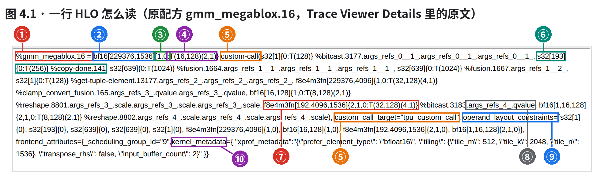
| # | 是什么 | 读法（框按页面里那段文字的位置画） |
|---|---|---|
| ① | 名字 ＝ 结果 opcode(操作数…), 属性… | 一行一条指令。名字去掉 % 就是 Trace Viewer 里的色块名（Find Events 里别带 %） |
| ② | 类型 ＋ 形状 | bf16[229376,1536]：输出 229,376 行 × 1,536 列。229,376 ＝ 每卡 7 条 × 4,096 token × 每个 token 选 8 个专家（0.2 的配置：每卡 7 条序列、每个 token 选 8 个专家）；f8e4m3fn 是 FP8（4 位指数、3 位尾数） |
| ③ | {1,0：维的内存顺序 | minor_to_major：第一个数是内存里变化最快的那一维。{1,0} 就是行主序（openxla.org/xla/shapes） |
| ④ | :T(16,128)(2,1)：分块 | tiling：先按 16×128 切块，再用 (2,1) 把同一列相邻 2 个 bf16 拼成一个 32 位（FP8 是 (4,1)，4 个拼一个）。官方 tiled_layout 页写 bf16 通常是 (8,128)(2,1)，本课 HLO 里实测是 16×128、FP8 是 32×128，以 HLO 为准 |
| ⑤ | custom-call ＋ target | custom-call ＝ 调一个外部 kernel；custom_call_target="tpu_custom_call" ＝ TPU 上的 Pallas kernel（JAX 公开源码 tpu_custom_call.py 用的就是这个名字） |
| ⑥ | 一个操作数：类型 %名字 | 括号里每个操作数都写成「类型 名字」，按顺序就是 Graph Viewer 边上的 0、1、2…：s32[193]{0:T(256)} %copy-done.141 是 1 号（录屏停 8 ①） |
| ⑦ | 权重：192 个专家 | 7 号操作数 f8e4m3fn[192,4096,1536]{2,1,0:T(32,128)(4,1)}：FP8、192 个专家、32×128 分块——第四节要找的就是这一个数 |
| ⑧ | 操作数名后面那一截 | .args_refs_4_.qvalue：这块数据喂给 kernel 的哪个参数（第 4 号参数的量化值）[推断：按名字读，没查拼接它的源码] |
| ⑨ | 每个操作数的排布约束 | operand_layout_constraints={…}：kernel 要求每个操作数按什么排布送进来，顺序同括号；这里能再读到一遍 s32[193] 和 f8e4m3fn[192,4096,1536] |
| ⑩ | kernel 自报的元数据 | kernel_metadata 里有这颗 kernel 的 tile：tile_m 512、tile_k 2048、tile_n 1536——原配方注入的那组 tile（0.2 折叠块：原配方运行时注入的那组 tile） |
集合通信那一行再多看三个属性（4.2 摘录里的 all-gather.573，和第五节 BF16 里收专家权重的 all-gather.580）：
| 属性 | 例 | 读法 |
|---|---|---|
replica_groups | mesh[…'fsdp'=64…] {'fsdp'} | 和哪些卡一组：只点了 fsdp 这一个轴，64 张卡一组。组多大，这个张量就被切成几份 |
dimensions | {1}（573）、{2}（580） | 沿第几维拼：573 拼专家那一维 [1,3,…] → [1,192,…]；580 拼 4096 那一维 [1,192,32,1536] → [1,192,4096,1536] |
is_spmd_generated="true" | 580 有，573 没有 | 字面意思是「SPMD 切分时生成的」：编译器按权重的切法自己插的，代码里搜不到这句 all_gather；573 没有这个属性，它是代码里在 shard_map 里亲手写的（4.5 的 ①，op_name 末段也是 shard_map/all_gather） |
*-done（在等哪次通信）→ 最后才看排布和分块（怀疑填充或排布转换时）。⭐ 两份程序逐条数：原配方有 12 条 all-gather 把专家权重从「本卡 3 个」收成「192 个」，6 条 reduce-scatter 把专家梯度从「192 个」散回「本卡 3 个」；改后这 18 条一条都没有。
| 最终 HLO 里的条数 | 原配方 | 改后 | 读法 |
|---|---|---|---|
| all-gather／reduce-scatter／all-reduce（全部） | 92／6／36 | 82／0／36 | all-reduce 一条没变，all-gather 少了 10 条，reduce-scatter 全没了 |
收专家权重：f8e4m3fn 的 [1,3,…] → [1,192,…] | 12 | 0 | 前向循环体 3 条、反向循环体 3 条（反向重算前向时再收一次）、循环外 6 条（剥在循环外的那一层） |
散专家梯度：bf16 的 [192,…] → [3,…] | 6 | 0 | 反向循环体 3 条、循环外 3 条；第二节小核上那三块 9–10 ms 的 reduce-scatter 就是循环体里这 3 条 |
每层 MoE 有三份专家矩阵（两份上投影、一份下投影），所以都是 3 条一组。光看总条数（92 → 82）只能说少了点什么；按形状数，才知道少的正是专家权重和专家梯度。 下面是原配方前向循环体里收第一份权重、交给 gmm 的那几行（降噪版，省掉的操作数写成 …）：
── 原配方 · 前向循环体
all-gather.574.cloned.1.call-start = ((f8e4m3fn[1,3,4096,1536], token[]), f8e4m3fn[1,192,4096,1536])
async-start(fusion.1669, …)
└ all-gather.573 = f8e4m3fn[1,192,4096,1536] all-gather(param_0.13420),
replica_groups=mesh[…'fsdp'=64…] {'fsdp'}, dimensions={1}
all-gather.574.cloned.1.call-done = f8e4m3fn[1,192,4096,1536] async-done(all-gather.574.cloned.1.call-start)
bitcast.3183 = f8e4m3fn[192,4096,1536] bitcast(all-gather.574.cloned.1.call-done)
gmm_megablox.16 = bf16[229376,1536] custom-call(…, clamp_convert_fusion.165, …, bitcast.3183, …) # 权重：192 个专家
── 改后 · 前向循环体
fusion.1642 = (f8e4m3fn[3,4096,1536], f8e4m3fn[3,4096,1536]) fusion(…), kind=kLoop # 本卡 3 个专家量化成 FP8
gmm.27 = bf16[229376,1536] custom-call(…, clamp_convert_fusion.165, …, get-tuple-element.14549, …)
# 权重：f8e4m3fn[3,4096,1536]
── 反向循环体：原配方 ／ 改后
tgmm_megablox.10 = bf16[192,4096,1536] custom-call(…)
→ reduce-scatter.13….call-start = ((bf16[192,4096,1536], …), bf16[3,4096,1536])
tgmm.8 = bf16[3,4096,1536] custom-call(…) （后面没有 reduce-scatter）192 ÷ 64 ＝ 3 就写在第一行里：async-start 的输入是本卡的 [1,3,4096,1536]，输出是 [1,192,4096,1536]。
里面真正干活的 all-gather.573 只按 'fsdp'=64 这一个轴分组（64 张卡一组），沿第 1 维拼：3 × 64 ＝ 192。
这就是第二节小核（SparseCore）那一行上看到的 all-gather——HLO 里的 async_execution_thread="sparsecore" 说明它交给小核去跑。
改后，gmm.27 的权重直接来自一个只做量化的 fusion，形状是 [3,4096,1536]，中间什么也没收。
第一节说过，原配方「先把专家权重量化成 FP8 再收」。那改后是不是把量化挪到了别处？顺着 fusion.1669（原配方）和 fusion.1642（改后）往上追到参数：
📌 ① 专家参数（fp8old param.391、fp8new param.619／620）f32[3,79,4096,1536]，sharding devices=[64,1,1,1,2] … last_tile_dim_replicate；② 进循环前转 bf16：fp8old bitcast_convert_fusion.11（融合体里就是 convert f32→bf16，在 ENTRY 里，每步一次），fp8new copy.2312／.2313（f32 → bf16 的 copy）。
📌 ③④ 循环体里：fp8old fusion.1669、fp8new fusion.1642（一次做两份），都是 dynamic-slice 取一层 → multiply(×2) → clamp(−448, 448) → convert f8e4m3fn。2 ＝ 448 ÷ 224：配置 weight_quantization_calibration_method=fixed,-224,224，f8e4m3fn 能表示的最大有限值是 448 [本课推导]。
📌 ⑤⑥ fp8old：fusion.1669 → all-gather.574（里面 all-gather.573，{'fsdp'} 64 份、dimensions={1}）→ bitcast → gmm_megablox.16 第 7 号操作数；40 号层前向小核上 2.380 ms。fp8new：fusion.1642 的输出就是 gmm.27 第 7 号操作数 [3,4096,1536]。网络上真正收进来的是其余 63 份，1,152 × 63/64 ≈ 1,134 MiB。
📌 ⑦ 「若先收 bf16」：bf16[192,4096,1536] ＝ 2,415,919,104 B。同一份程序里有现成的例子：MTP 层的专家权重是编译器插的 all-gather 以 bf16 收齐的（fp8new all-gather.537／538／539）。token 激活：两份都是 clamp_convert_fusion.165 → f8e4m3fn[229376,4096]（gmm 第 5 号操作数），配置 act_quantization_calibration_method=fixed,-224,224。
| # | 这一步 | 原配方 | 改后 |
|---|---|---|---|
| ① | f32 主权重（本卡 3 个专家 × 79 层） | f32[3,79,4096,1536]，5,688 MiB，两份一样 | |
| ② | 进循环前转 bf16，一步一次 | bf16[79,3,4096,1536]，2,844 MiB | |
| ③ | 循环里取出这一层 | bf16[1,3,4096,1536]，36 MiB | |
| ④ | 量化：乘 2、截到 ±448、转 FP8 | f8e4m3fn[1,3,4096,1536]，18 MiB；四个运算、两个常数一模一样 | |
| ⑤ | 量化之后 | all-gather 收齐 64 份，收的是 FP8；40 号层前向小核上 2.38 ms | 不收 |
| ⑥ | kernel 拿到的权重 | f8e4m3fn[192,4096,1536]，1,152 MiB | f8e4m3fn[3,4096,1536]，18 MiB |
| ⑦ | 这一步要收的字节 | 1,152 MiB（先收 bf16 再量化就是 2,304 MiB） | 0 |
量化那一步两份一字不差，乘的 2 就是 448 ÷ 224（配置把权重的量化范围定成 ±224，FP8 最大能表示 448）。原配方确实先量化再收，收的是 FP8，比收 bf16 省一半字节； 改后并没有挪动量化，只是量化之后那条 all-gather 没了。
[4096,192] 的小权重（沿 4096 这一维收），以及 MTP 层（多 token 预测，主干 80 层之外的那一层）三份专家矩阵的 bf16 版 bf16[3,4096,1536] → [192,4096,1536]。convert_element_type 而不是 shard_map/all_gather：不是代码里写的那几行收的，是编译器按权重的切分自己插的（这两条 all-gather 带 is_spmd_generated=true，4.1 折叠块讲这个属性）。所以 MTP 层在两份里都是收齐了 192 个专家再算（4.5 再用到）。[3,1,4096,1536] → [192,1,4096,1536]，所以表里按形状数是 12 条、按指令数是 10 条。⭐ 原配方 gmm_megablox.16 的权重往上追：本卡 [1,3,…] → 64 张卡 all-gather → [192,4096,1536]；改后 gmm.27 的权重就是本卡的 [3,4096,1536]。两颗 kernel 拿到的 token 分组表都是 192 组。
Graph Viewer 是 XProf 里的一页：选一条指令当中心，把它的操作数（上游）和使用者（下游）画成一张图，框是指令，箭头是数据流，带标题的大框是被调用的子计算，虚线框是还有输入没画出来的节点。 先看一遍怎么从 Trace Viewer 的一个色块走进 Graph Viewer、在图上沿边往上追：
| 停 | 做什么 | 读出什么 |
|---|---|---|
| 1 | 单击原配方前向 40 号层的 gmm_megablox.16 | Wall Duration 3,425,196 ns；Details 右栏第一行是 Graph Viewer 链接 |
| 2 | 看 Details 的 Start Stack Trace | 这条指令的 HLO 原文：一个操作数是 f8e4m3fn[192,4096,1536]，还有 s32[193]（图 4.1 逐个符号读） |
| 3 | 点链接 | XLA Op Name 已填好，右边却报找不到：开源版不认链接里的模块名，下拉框停在 jit_add |
| 4 | XLA Modules 手动选 jit_train_step | Op 名被清空，右边出一排快捷按钮；点 gmm_megablox.16（或填回名字点 Search Graph） |
| 5 | 图出来了 | 中心标签太长，整张图缩得很小；Graph Width ＝ 往外画几层；图下方 Save SVG |
| 6 | 存下 SVG 看全图 | 红菱形 ＝ 中心；上面一排是操作数，下面灰底大框是吃它输出的 fusion；虚线框 ＝ 它还有输入没画出来（到 Graph Width 的边了） |
| 7 | 放大中心节点 | custom-call、tpu_custom_call、3.43 ms；操作数排布里有 f8e4m3fn[192,4096,1536]、s32[193]；tile 512／2048／1536；输出 bf16[229376,1536] |
| 8 | 看边上的数字 | 数字 ＝ 第几号操作数：1 号 copy-done.141（分组偏移），7 号 bitcast.3183（权重） |
| 9 | 沿 7 号往上追 | bitcast ← all-gather.574…call-done ← call-start，带 async_execution_thread="sparsecore" |
| 10 | 进子计算 | 真正干活的 all-gather.573：本卡 [1,3,…]，'fsdp'=64、dimensions={1}，收成 [1,192,…] |
| 11 | 改后以 gmm.27 为中心 | 权重 f8e4m3fn[3,4096,1536]，7 号操作数直接来自量化 fusion.1642；分组偏移照样 s32[193] |
| 12 | 回 Trace Viewer 单击 gmm.27 | Details 里同一行 HLO：f8e4m3fn[3,4096,1536]、s32[193]——不开 Graph Viewer 也读得到 |
*-done 的输入（追到边界就调大 Graph Width 或换中心重画）→
回 HLO 原文核一遍（Details 里同一行，停 12）。原片 topic07-xrec-graph.mp4（末帧 png）。录屏里那几张放大图拼成一张静态对照，就是图 4.2：
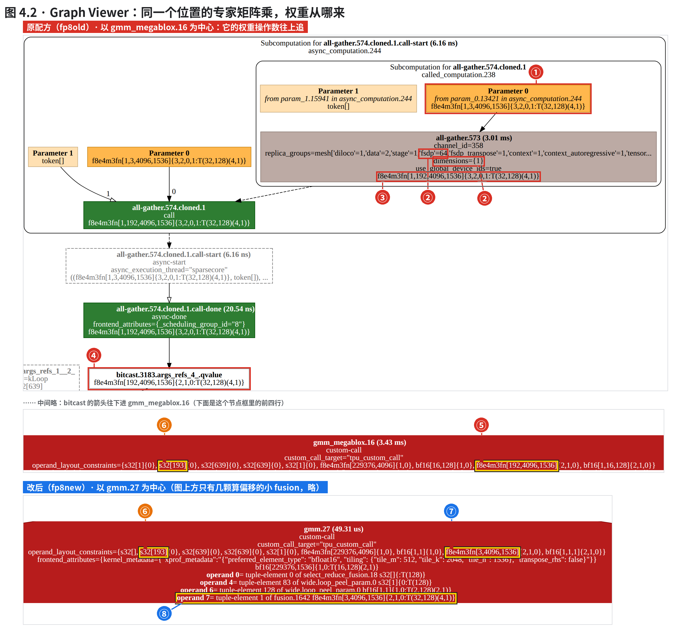
| # | 是什么 | 图上读到什么（框按 Graph Viewer 那张 SVG 里节点和文字的位置画） |
|---|---|---|
| ① | 本卡那份权重 | Parameter 0 ＝ f8e4m3fn[1,3,4096,1536]：这张卡手里只有 3 个专家（192 ÷ 64），已经量化成 FP8 |
| ② | 和谁一起收、沿哪一维拼 | all-gather.573 的 replica_groups 里只点了 'fsdp'=64 这一个轴：64 张卡一组；dimensions={1}：沿第 1 维（专家那一维）拼起来 |
| ③ | 收齐之后 | 输出 f8e4m3fn[1,192,4096,1536]：3 × 64 ＝ 192 个专家；它包在一个异步调用里（带标题的大框 ＝ 子计算），外面是 call-start → call-done，SC0 行上看到的那块 all-gather 就是它 |
| ④ | 去掉多余的那一维 | bitcast 成 f8e4m3fn[192,4096,1536]，箭头进 gmm_megablox.16 |
| ⑤ | kernel 收到的权重 | gmm_megablox.16 的操作数形状表里，权重那一项是 f8e4m3fn[192,4096,1536]：192 个专家都在 |
| ⑥ | 每组 token 从第几行起 | s32[193]：192 个专家的分组偏移（193 ＝ 192 ＋ 1 个结尾）。两份一模一样：token 照样按 192 组排好、送进来 |
| ⑦ | 改后 kernel 收到的权重 | gmm.27 的权重那一项是 f8e4m3fn[3,4096,1536]：只有本卡那 3 个 |
| ⑧ | 它从哪来 | operand 7 ＝ fusion.1642 的输出：把本卡那 3 个专家量化成 FP8 的那个 fusion。中间没有 all-gather，整张图里一条集合通信都没有 |
原配方那颗 kernel 的权重操作数一路往上，能看到整个「收」的过程；改后那颗 kernel 的同一个操作数，直接是本卡 3 个专家量化后的结果。
最该看的是 ⑥：s32[193] 是 192 组 token 的分组偏移，两边一样——token 照样按 192 个专家分好组送进来，只是改后手里只有 3 个专家的权重。
graph_viewer（首页 Tools 里叫 Graph Viewer），run fp8old。页面下方的 quick-start 列表里点 jit_train_step(…) - gmm_megablox.16，就以它为中心画图；改后那份点 gmm.27。也可以在 XLA Op Name 里填名字、Graph Width 填 1，点 Search Graph。⭐ 同一张卡、同一批 token：原配方先收齐 192 个专家再算，算完梯度再散回去；改后手里只有 3 个，就只算了 3 组。
4.3 留下一个问题：改后的 kernel 拿 3 个专家的权重，去乘按 192 组分好的 token，会报错，还是算出点什么？把卡 0 上两份程序的先后放慢了看：
| 停 | 看什么 | 读出什么 |
|---|---|---|
| 1 | 原配方 ① all-gather | 别的 189 格从其他 63 张卡收进来：[1,3,4096,1536] → [1,192,4096,1536]（图 4.2 ①–③） |
| 2 | ② gmm | 192 组都有权重，右边全亮：一层前向 3 颗 gmm 合 10.1 ms |
| 3 | ③ tgmm ＋ reduce-scatter | 先出 192 个专家的梯度，64 张卡加总后每卡只留自己那 3 个：[192,…] → [3,…] |
| 4 | 改后 ① 没有 all-gather | 手里还是 3 个：[3,4096,1536]（图 4.2 ⑦⑧） |
| 5 | ② gmm | 只有 3 组的行算了，其余 189 组的行写 0：一层 3 颗合 0.11 ms |
| 6 | ③ tgmm | 直接出 3 个专家的梯度，没有要散的 |
| 7 | 小结 | 形状处处合法，没有报错；活少了 189/192，专家矩阵乘每步 3,668.8 → 98.3 ms |
原片 topic07-experts.mp4（末帧 png，和第一帧相同）。动画里画的是卡 0：它手里正好是第 0–2 号专家，改后算的也正好是第 0–2 组 [推断：读代码]，画面上一一对齐；别的卡见 4.5 的折叠块。
动画是一张卡上的先后。把 192 个专家怎么切到 64 份上、两条分支各拿几个去算，摊开成一张静态图：
📌 怎么切：配置 num_experts=192、ici_fsdp_parallelism=64、ici_data_parallelism=2（64 颗芯片 × 2 个 TensorCore ＝ 128 个 device）。最终 HLO 里专家参数是本卡的 f32[3,79,4096,1536]（3 个专家 × 79 层），sharding 写 devices=[64,1,1,1,2] … last_tile_dim_replicate：首维 192 按顺序切 64 块，每块在 2 个 device 上各存一份。图里的「卡」＝ fsdp 轴的一份。
📌 ① 原配方 all-gather.573：输入本卡 [1,3,4096,1536]，replica_groups=…{'fsdp'}（64 份）、dimensions={1}，输出 [1,192,4096,1536]（f8e4m3fn）；② gmm_megablox.16 的权重操作数 [192,4096,1536]，改后 gmm.27 是 [3,4096,1536]，两边分组偏移都是 s32[193]；一层前向 3 颗合 10.107 → 0.109 ms（40 号层）。
📌 ③④ 原配方 tgmm_megablox.10 输出 bf16[192,4096,1536]，reduce-scatter 按 {'fsdp'} 散回 [3,4096,1536]；改后 tgmm.8 直接输出 [3,4096,1536]。⑤ 专家梯度的 all-reduce（原配方 all-reduce.384、改后 .394）按 {'data'}，两份都有。
📌 改后其余 189 组写 0：公开 MaxText backend.py 只给本卡 3 组建表、其余补 0（L346–347、L555–561）。卡 0 算的是哪 3 组 token 是读代码得出的 [推断]，图里不标第几组。
| # | 原配方 | 改后 |
|---|---|---|
| ① | 别的 63 张卡各送来 3 个，拼成 [1,192,4096,1536] | 没有 all-gather，手里就是 [3,4096,1536] |
| ② | gmm：192 组 token 都乘上了权重；40 号层前向 3 颗合 10.1 ms | gmm：只有 3 组有权重可乘，其余 189 组输出写 0；3 颗合 0.11 ms |
| ③ | 算出的梯度是整套 192 个：bf16[192,…] | 梯度本来就只有 3 个：bf16[3,…] |
| ④ | reduce-scatter：64 份求和，每卡留自己 3 个 | 没有 |
| ⑤ | all-reduce：同一份专家在 data 轴的 2 个 device 上各有一套梯度，相加（两份都有，就是第二节通信图里的 ⑦） | |
第二节记下的那个疑点在这里有了答案：改后专家梯度只在 data 轴 2 份之间求和，64 份之间那一次 ④ 没有了。一路下来形状处处合法，没有一处报错。
⭐ HLO 指令带着 op_name，能指回代码里是哪一条分支在跑；公开的 MaxText 里，收权重的 all_gather 和散梯度的 psum_scatter 只写在 tokamax 那一支，改后走的另一支直接调 kernel，两样都没有。
每条 HLO 指令都带一个 op_name：JAX 在追踪你的程序时记下的名字路径，最后一段是原语，往左是一层层外壳。三条关键指令的 op_name 最后几段：
| 指令 | op_name 最后几段 | 说明在哪一支 |
|---|---|---|
| all-gather.573（原配方） | …/while/body/closed_call/shard_map/all_gather | 代码里在 shard_map 里亲手写的 jax.lax.all_gather |
| gmm_megablox.16（原配方） | …/shard_map/tokamax:{"op":{"__type":"tokamax…PallasMosaicTpuRaggedDot", …}} | tokamax 的 ragged_dot：use_tokamax_gmm=True 那一支 |
| gmm.27（改后） | …/shard_map/jit(gmm)/pallas_call | MaxText 自带 megablox 的 backend.gmm：另一支 |
第零节那 13 行配置差异里，除了 12 个 tile 值，就只有 use_tokamax_gmm: True → False。下面是它切换的那两支（公开仓库，见折叠块里的版本说明；只删了与本例无关的行）：
# src/maxtext/kernels/megablox/ops.py · _gmm_fwd（前向）
# QAG is only supported for following conditions
if use_tokamax_backend: # L191
if quantization_rule and quantization_rule.bwd_qtype:
if quantization_rule.weight_calibration_method.startswith("fixed") and isinstance(rhs, qpl.QArray):
if weight_gather_axes:
for axis_name, axis_idx in weight_gather_axes:
rhs_qvalue = jax.lax.all_gather(rhs.qvalue, axis_name, axis=axis_idx, tiled=True) # ① L196：收齐 192 个专家
rhs = dataclasses.replace(rhs, qvalue=rhs_qvalue)
…
elif use_tokamax_backend:
out = tokamax.ragged_dot(lhs=lhs, rhs=rhs, group_sizes=group_sizes, …) # ② L223 → gmm_megablox.*
else:
out = backend.gmm(lhs, rhs, group_sizes, preferred_element_type, tiling[:3], …) # ③ L235 → gmm.*：rhs 还是本卡 3 个
# 同文件 · _gmm_bwd（反向）
if use_tokamax_backend or use_gmm_v2: # L315
…
drhs = tokamax.ragged_dot_general(lhs=lhs, rhs=drhs_dout, …) # tgmm_megablox.*：[192,4096,1536]
if quantization_rule and quantization_rule.bwd_qtype and weight_gather_axes:
for axis_name, axis_idx in reversed(weight_gather_axes):
drhs = jax.lax.psum_scatter(drhs, axis_name, scatter_dimension=axis_idx, tiled=True) # ④ L392：散回每卡 3 个
else:
dlhs = backend.gmm(dlhs_dout, rhs, group_sizes, …) # ⑤ L394–416：没有收，也没有散
drhs = backend.tgmm(lhs.swapaxes(0, 1), drhs_dout, group_sizes, …) # tgmm.*：[3,4096,1536]① 和 ④ 就是 4.2 表里那 12 条和 6 条：前向收、反向散，成对出现，都只在 tokamax 那一支；3.6 显存峰值里那 3 块 tgmm_megablox.10／11／12，就是 ④ 散之前的 drhs。weight_gather_axes 两支都会收到（这份配置专家维按 FSDP 切、权重校准方法以 fixed 开头时，
MoE 层就会把「沿 fsdp 轴收」这个参数传下来），可走 ③⑤ 那一支时没人用它。前向漏收、反向漏散，正好对上 profile 里小核上 all-gather 和 reduce-scatter 一起不见了。
⭐ 为什么一声不吭：backend.gmm 本来就支持「这张卡只负责其中几组专家」的用法。它看到权重只有 3 组、分组表有 192 组，就只给 3 组建表、只算这 3 组的行，其余的行补 0。形状处处合法，没有任何地方会报错。
# src/maxtext/kernels/megablox/backend.py · gmm
num_current_groups = rhs.shape[0] # L346：3
num_total_groups = group_sizes.shape[0] # L347：192
… # L374：make_group_metadata(…, num_nonzero_groups=rhs.shape[0])，只为 3 组建表
if existing_out is None and num_current_groups < num_total_groups: # L555
out = _zero_uninitialized_memory(out, start_group=group_offset[0],
num_nonzero_groups=rhs.shape[0], …) # 其余行写 0：jnp.where(valid_mask, out, 0)github.com/yangwhale/maxtext 的 hunyuan3 分支（基于上游 main，三个提交）。上面行号按这个分支的 1afaa0fb。ops.py 和 backend.py：两个文件和上游 AI-Hypercomputer/maxtext（原 google/maxtext）的 188af874（2026-07-28）一字不差，行号相同。ops.py:235 _gmm_fwd（就是 ③ 那行）、backend.py:548（call_gmm），两份的 MoE 调用分别停在 moe.py:1504（tokamax 分支里的调用）和 moe.py:1534（megablox 分支里的调用），和这一版的行号一一对上。调用栈有时会指错，这里它和 op_name 说的是同一件事，所以拿来作旁证。group_offset，只有开了 ring-of-experts 时才按卡号算，这份配置没开（use_ring_of_experts=False），所以每张卡都是 0：每张卡算的都是第 0–2 组的 token。⭐ 改后 loop fusion 多出来的 276 ms，就是上面那个「其余行写 0」；循环外没缩水的 9 颗专家矩阵乘，是 MTP 那一层，它的专家权重由编译器收齐了。
| 第三节的疑点 | 在 HLO 和 trace 里查到的 | 结论 |
|---|---|---|
| loop fusion 改后多 276 ms | 改后每层多出两类 loop fusion：前向 broadcast_select_fusion（op_name 末段 jit(gmm)/jit(_where)/select_n，输出 bf16[229376,4096]）每步 79 次、95.1 ms；
反向 select_add_fusion 每步 79 次、225.6 ms，里面是三个 select（同样来自 jit(gmm)/jit(_where)）加一个把两路输入梯度相加的 add_any。原配方那个 add_any 是单独一个逐元素算子（每步 135.5 ms，记在 non-fusion elementwise 里） |
就是 backend.py 的补 0（jnp.where）：每层把 229,376 行里 189/192 的行写成 0，前向一次、反向和相加融在一起。loop fusion ＋ 276 ms 里，约 135.5 ms 是原来就有的那次相加换了类别（3.4 表里 non-fusion elementwise 同时 − 133.7 ms），净多出来的约 140 ms 才是补 0 本身 |
| 循环外 9 颗 gmm 没缩水，在哪一层 | 中位步里循环外一共 21 颗专家矩阵乘：前向循环前 3 颗、反向循环后 9 颗，op_name 带 while/body，权重和梯度都是 [3,…]，每颗约 0.05–0.07 ms（循环剥出来的那一层，同样缩水）；
其余 9 颗 op_name 不带 while/body，梯度 bf16[192,…]，每颗 4.2–5.2 ms（TPU:0 上 3 步逐颗；3.3 的 Op Stats 是 8 个核的平均，所以写 4.2–5.0），调用栈经过 multi_token_prediction.py，权重参数名是 mtp_block/…/MoeBlock_0/wi_0 |
是 MTP 层（多 token 预测，主干之外的那一层）。它的专家权重由编译器按 bf16 收齐成 192 个（4.2 折叠块），走的不是那两行收和散，所以没漏，两份里一样慢 |
⭐ 把收和散从 tokamax 那一支里提出来、两支共用，一步 12.501 秒，比原配方的 11.761 秒还慢 6%：「快了 50%」全部来自漏算。
修法就是把 ① 的 all_gather 和 ④ 的 psum_scatter 挪到 if 外面：只要声明了 weight_gather_axes 就收，前向收了反向就散。
补上之后的数来自混元3 调优记录（TUNING-v7 的 3.4.10 节）：一步 12.501 s，每芯片 637.0 TFLOP/s，原配方 11.761 s、677.0 TFLOP/s。
文档数 这一次没有留 profile，本课复算不了，只能照录。
第四节确认了：FP8 那 3.9 秒是漏算出来的。那反过来，一个真变快的改动，在同样几页上长什么样？
不用另找例子：同一个改动（use_tokamax_gmm: True → False 加同一组 12 个 tile 值）在 BF16 的配方上也做过一次。
⭐ BF16 两份配置的差别和 FP8 一字不差；一步 21,747.2 → 20,693.8 ms，快了 1,053.4 ms（4.8%）。
| 同一个改动 | FP8（第零到四节） | BF16（本节） |
|---|---|---|
| 配置差别 | use_tokamax_gmm True → False ＋ 12 个 w{i,o}_tile_* 值 1024 → 2048／1536，两份 diff 完全一样（两边各自 diff 整份 MaxText 配置） | |
| 一步（TPU:0 中位步） | 11,758.2 → 7,842.1 ms（−3,916.1） | 21,747.2 → 20,693.8 ms（−1,053.4） |
| 小核上 all-gather／reduce-scatter（ms／步） | 1,409.3／2,354.0 → 205.8／0 | 2,522.8／2,543.1 → 2,593.7／2,606.5 |
| HLO 里收 192 个专家的 all-gather／散专家梯度的 reduce-scatter（条） | 12／6 → 0／0 | 12／6 → 12／6 |
| 专家矩阵乘（gmm 家族，ms／步） | 3,668.8 → 98.3（−97%） | 8,183.8 → 7,116.2（−13%） |
| Op Profile：custom-call 的 FLOPS 利用率 | 53.39% → 117.45% | 45.57% → 49.62% |
| Op Stats：第一个专家矩阵乘排第几 | 第 4 → 第 124（掉出前十） | 第 4 → 第 4（前十里还是 7 个） |
| kernel 拿到的专家权重 | [192,4096,1536] → [3,4096,1536] | [192,4096,1536] → [192,4096,1536] |
| 显存：峰值那一刻最大的几块（Memory Viewer） | 循环里这一层 3 块 [192,…] 专家梯度 → 一块不剩，峰值挪到输出头 | 两份一样：logits ＋ 收齐的 192 个专家权重 |
右边一列每一行都「没变」或「变了一点」，只有步时和专家矩阵乘在动；左边一列从「小核上 all-gather」那一行起，每一行都在报警。下面两小节在 profile 里把右边一列一行行看过去。
⭐ 反向 40 号层并排：小核上收 192 个专家的 3 条 all-gather、散专家梯度的 reduce-scatter 两边都在，宽度几乎一样；主核上 9 颗专家矩阵乘一颗不少，合计 79.11 → 66.89 ms。
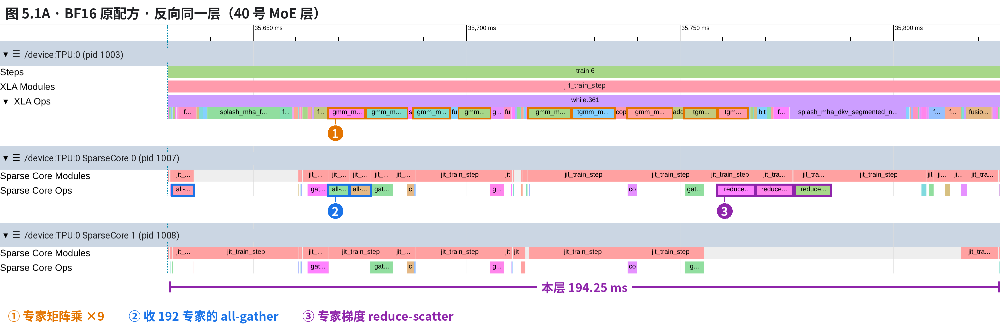
| # | 是什么 | 怎么看出来（事件名、时刻都从 xplane 读） |
|---|---|---|
| ① | 专家矩阵乘 ×9 | TC：本层 9 个专家矩阵乘（gmm／tgmm）合 79.11 ms 主图里是 6 个框： gmm_megablox.11＋gmm_megablox.12（35,667.665 ms 起，8.699／9.627 ms）；gmm_megablox_transpose_rhs.8（35,687.634 ms 起，8.405 ms）；gmm_megablox.13（35,698.274 ms 起，7.202 ms）；gmm_megablox_transpose_rhs.9＋tgmm_megablox.10（35,714.635 ms 起，9.961／10.053 ms）；gmm_megablox_transpose_rhs.10（35,737.722 ms 起，10.414 ms）；tgmm_megablox.8＋tgmm_megablox.9（35,751.081 ms 起，7.827／6.926 ms） |
| ② | 收 192 专家的 all-gather | SC0：收 192 个专家权重的 all-gather 527／529／531：4.86／4.90／4.86 ms，形状 bf16[1,192,4096,1536] 等 主图里是 2 个框： all-gather.527（35,631.171 ms 起，4.860 ms）；all-gather.529＋all-gather.531（35,667.669 ms 起，4.899／4.865 ms） |
| ③ | 专家梯度 reduce-scatter | SC0：专家梯度 reduce-scatter 198／200／202：8.86／8.58／8.16 ms，形状 bf16[192,32,1536] 等 主图里是 2 个框： reduce-scatter.198＋reduce-scatter.200（35,758.909 ms 起，8.855／8.581 ms）；reduce-scatter.202（35,777.205 ms 起，8.163 ms） |
| 括号 | 本层 194.25 ms | 窗口＝本层，左右各留 0.5 ms；改后那张同窗宽，左端对齐它自己的这一层 |
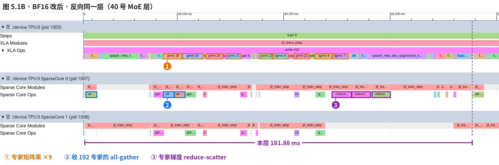
| # | 是什么 | 怎么看出来（事件名、时刻都从 xplane 读） |
|---|---|---|
| ① | 专家矩阵乘 ×9 | TC：本层 9 个专家矩阵乘（gmm／tgmm）合 66.89 ms（原配方同一层 79.11 ms） 主图里是 6 个框： gmm.18＋gmm.19（34,093.767 ms 起，8.632／9.635 ms）；gmm.20（34,113.694 ms 起，7.437 ms）；gmm.21（34,123.365 ms 起，6.214 ms）；gmm.22＋tgmm.8（34,138.796 ms 起，6.305／6.834 ms）；gmm.23（34,155.005 ms 起，7.000 ms）；tgmm.6＋tgmm.7（34,164.978 ms 起，7.867／6.971 ms） |
| ② | 收 192 专家的 all-gather | SC0：收 192 个专家权重的 all-gather 550／552／554：4.86／4.95／4.87 ms，形状 bf16[1,192,4096,1536] 等 主图里是 2 个框： all-gather.550（34,057.312 ms 起，4.857 ms）；all-gather.552＋all-gather.554（34,093.767 ms 起，4.951／4.872 ms） |
| ③ | 专家梯度 reduce-scatter | SC0：专家梯度 reduce-scatter 198／200／202：9.08／8.74／8.33 ms，形状 bf16[192,32,1536] 等 主图里是 2 个框： reduce-scatter.198＋reduce-scatter.200（34,172.845 ms 起，9.081／8.737 ms）；reduce-scatter.202（34,191.669 ms 起，8.329 ms） |
| 括号 | 本层 181.88 ms | 灰虚线：本层结束，右边已是下一层（A/B 两张同窗宽 ＝ 原配方那一层的宽度） |
拿它和第二节的图 2.5A／B 比：FP8 改后那一层的 ②③ 是空的虚线框，这里是实线框，宽度和原配方几乎一样（all-gather 4.86–4.99 ms、reduce-scatter 8.2–9.1 ms）。 ① 也不一样：FP8 改后 9 颗加起来只剩 0.48 ms，这里 9 颗还是 6–10 ms 一颗，每颗都还在干一整份活。
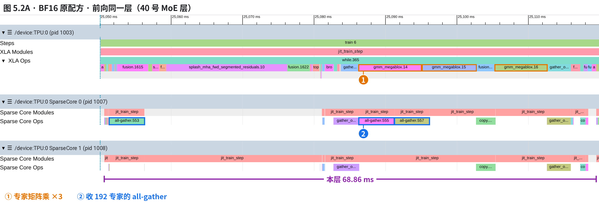
| # | 是什么 | 怎么看出来（事件名、时刻都从 xplane 读） |
|---|---|---|
| ① | 专家矩阵乘 ×3 | TC：本层 3 个专家矩阵乘（gmm／tgmm）合 23.55 ms：8.76／7.58／7.21 ms 主图里是 2 个框： gmm_megablox.14＋gmm_megablox.15（25,086.325 ms 起，8.761／7.583 ms）；gmm_megablox.16（25,105.379 ms 起，7.210 ms） |
| ② | 收 192 专家的 all-gather | SC0：收 192 个专家权重的 all-gather 553／555／557：4.86／4.92／4.88 ms，形状 bf16[1,192,4096,1536] 等 主图里是 2 个框： all-gather.553（25,051.390 ms 起，4.857 ms）；all-gather.555＋all-gather.557（25,086.327 ms 起，4.923／4.883 ms） |
| 括号 | 本层 68.86 ms | 窗口＝本层，左右各留 0.5 ms；改后那张同窗宽，左端对齐它自己的这一层 |
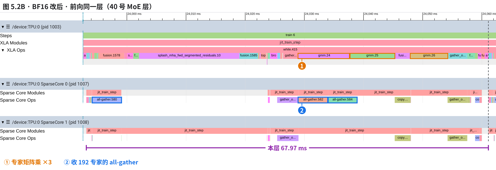
| # | 是什么 | 怎么看出来（事件名、时刻都从 xplane 读） |
|---|---|---|
| ① | 专家矩阵乘 ×3 | TC：本层 3 个专家矩阵乘（gmm／tgmm）合 22.48 ms：8.69／7.57／6.22 ms（原配方同一层 23.55 ms） 主图里是 2 个框： gmm.24＋gmm.25（24,029.011 ms 起，8.692／7.570 ms）；gmm.26（24,047.985 ms 起，6.221 ms） |
| ② | 收 192 专家的 all-gather | SC0：收 192 个专家权重的 all-gather 580／582／584：4.87／4.99／4.89 ms，形状 bf16[1,192,4096,1536] 等 主图里是 2 个框： all-gather.580（23,994.200 ms 起，4.866 ms）；all-gather.582＋all-gather.584（24,029.013 ms 起，4.992／4.886 ms） |
| 括号 | 本层 67.97 ms | 灰虚线：本层结束，右边已是下一层（A/B 两张同窗宽 ＝ 原配方那一层的宽度） |
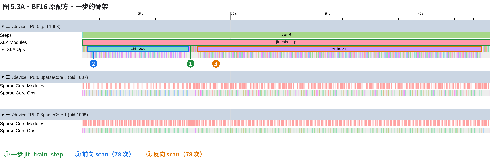
| # | 是什么 | 怎么看出来（事件名、时刻都从 xplane 读） |
|---|---|---|
| ① | 一步 jit_train_step | 一步：XLA Modules 行上的 jit_train_step，21,747.23 ms（3 个完整步的中位步） |
| ② | 前向 scan（78 次） | 前向 scan：while.365，5,378.13 ms，循环 78 次（0 号层被编译器剥到循环前面单独算，见下面折叠块） |
| ③ | 反向 scan（78 次） | 反向 scan：while.361，15,145.27 ms，循环 78 次，层号倒着走 |
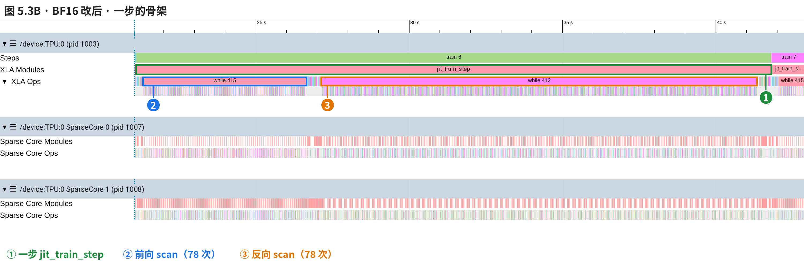
| # | 是什么 | 怎么看出来（事件名、时刻都从 xplane 读） |
|---|---|---|
| ① | 一步 jit_train_step | 一步：XLA Modules 行上的 jit_train_step，20,693.81 ms（3 个完整步的中位步） |
| ② | 前向 scan（78 次） | 前向 scan：while.415，5,303.16 ms，循环 78 次（0 号层被编译器剥到循环前面单独算，见下面折叠块） |
| ③ | 反向 scan（78 次） | 反向 scan：while.412，14,191.68 ms，循环 78 次，层号倒着走 |
bf16old／bf16new，Trace Viewer 的 view_start／view_end 用下面两组窗口（反向 40 号层，单位 ms）；前向同一层把窗口换成第二组。35630.027–35825.278，bf16new 34056.155–34251.406。前向：bf16old 25050.132–25119.996，bf16new 23992.641–24062.505。bf16[1,192,4096,1536]，reduce-scatter 输出 bf16[192,32,1536]（第三条是 bf16[32,294912]：294,912 ＝ 192 × 1,536，同一种梯度换了排布）。⭐ 一步少 1,053.4 ms，custom-call 这一类少 1,054.1 ms，其中专家矩阵乘少 1,067.6 ms：账是对得上的，而且每颗 kernel 都在、每颗都短了一截。
| BF16 · 每步（TPU:0 中位步） | 原配方 | 改后 | 差 |
|---|---|---|---|
| 一步 | 21,747.2 | 20,693.8 | −1,053.4 |
| custom-call（Pallas kernel 这一类） | 13,121.3 | 12,067.2 | −1,054.1 |
| 其中专家矩阵乘（gmm／tgmm） | 8,183.8（957 颗） | 7,116.2（956 颗） | −1,067.6 |
| 反向 40 号层 9 颗专家矩阵乘合计 | 79.11 | 66.89 | −12.22 |
| Op Stats 第一个专家矩阵乘：每次平均（µs） | 10,411.3（gmm_megablox_transpose_rhs.10） | 9,640.6（gmm.19） | |
| 同一颗的 Model GFLOP/s（每核峰值约 1,137,000） | 475,232 | 513,223 |
三处对账：步时差 ≈ custom-call 差 ≈ 专家矩阵乘差；颗数一样（每步差 1 颗，本课没追是哪一颗）；每颗还在合理的速度上——Model GFLOP/s 是峰值的四成多， 不像 FP8 改后那颗 gmm.27 报出 5,800 万 GFLOP/s（FP8 峰值的 25 倍）。为什么新 kernel 每颗快 10% 上下，是 kernel 和 tile 自己的事，本课不拆；profile 能告诉你的是：活一样多，干得快了。
少的时间也能一层一层摊回去：反向 40 号层 9 颗少 12.22 ms，前向同一层 3 颗少 1.07 ms（图 5.2A／B），一层合计 13.29 ms，× 78 层 ≈ 1,037 ms，和一步少的 1,053.4 ms 只差十几毫秒。
两张总账页上也是同样的样子：
bf16[12,4096,120832]（每块 11,328 MiB）和 3 块收齐的 192 个专家权重；运行时峰值两份都是 93.52 GiB。同样的活，就要同样的地方放。3.6 显存录屏的停 12 就是 bf16old 这一页：悬停的参数是 f32[192,79,1536,32]，192 个专家都在，4,096 那一维只剩 32（这根是 wo）。⭐ BF16 的专家权重不是按「专家」那一维切的，而是按 4096 那一维切；编译器替你插了收齐（HLO 里看得到），不管走哪条分支，kernel 拿到的都是 192 个专家。
调优记录（TUNING-v7 3.4.10 节）把 FP8 那次漏算的触发条件写成三条，要同时成立。拿 BF16 的配置逐条对：
| 触发条件 | FP8 | BF16 |
|---|---|---|
① shard_exp_on_fsdp=True 且权重校准以 fixed 开头 → 代码会把「沿 fsdp 收专家」这个参数传下去 | 成立 | 不成立：shard_exp_on_fsdp=False；BF16 也不量化（quantization=NONE），没有校准这一说 |
② use_tokamax_gmm=False，走 native 那一支 | 成立 | 成立（同一个改动） |
| ③ 专家数能被 FSDP 份数整除，专家维真被切开 | 成立 192÷64＝3 | 不成立：ici_fsdp_parallelism=-1 ＝ 128 份，192 ÷ 128 除不尽；何况第 ① 条已经没让专家维参与切分 本课推导 |
HLO 里看得到后果：BF16 每卡手里是 192 个专家、每个只有 4096 里的 32 行。收齐它的 all-gather 是编译器自己插的——
── BF16 改后 · 前向循环体（降噪）
all-gather.580 = bf16[1,192,4096,1536] all-gather(param_0.11980), # 输入 param_0.11980 = bf16[1,192,32,1536]
replica_groups=mesh['axis_0'=1,'axis_1'=128,'axis_2'=1] {'axis_1'}, dimensions={2},
frontend_attributes={is_spmd_generated="true"}
gmm.24 = bf16[393216,1536] custom-call(…),
operand_layout_constraints={…, bf16[393216,4096]{1,0}, bf16[192,4096,1536]{2,1,0}}沿第 2 维（从 0 数，就是 4096 那一维）拼 128 份：32 × 128 ＝ 4096；属性 is_spmd_generated="true"，代码里搜不到这句（4.1 折叠块的三个属性）。
gmm.24 拿到的权重是 [192,4096,1536]，393,216 ＝ 每卡 12 条 × 4,096 token × 8 个专家。专家维没被切小，就不存在「3 个专家也是合法输入」这个陷阱——4.7 那条 note 的反面。
⭐ 真快：活的条数和形状不变，同样的 kernel 每颗短一截，利用率还在 100% 以下。漏算：某一类活的条数或形状变了，利用率超出物理上限。
| 去哪看 | 真变快（BF16） | 漏算（FP8） |
|---|---|---|
| 先估（第一节） | +5%：专家矩阵乘占一步约 38%（8,183.8 ÷ 21,747.2），它快 13%，折到一步正好约 5% | +50%：同类 MoE 换 FP8 才 +21%，它和稠密 405B 的 +53% 一样多 |
| Trace Viewer 同一层（第二节） | 每一行都还在，色块变窄 | 小核上一类通信整块消失，kernel 窄到 1/93 |
| Op Profile／Op Stats（第三节） | 利用率 49.62%；排名、次数都不变 | 利用率 117.45%；排名 4 → 124，单颗报到 FP8 峰值的 25 倍 |
| HLO（第四节） | 集合通信条数、kernel 的权重形状一样 | 收专家的 all-gather 12 → 0，权重 [192,…] → [3,…] |
| 显存（3.6） | 峰值差 2 MiB，峰值那一刻最大的几块两份一样 | 峰值差 169 MiB，可循环里装 192 个专家梯度的 3 块不见了，峰值从反向挪到输出头 |
回头看这一路：一个数好得不像真的，我们没有先怀疑也没有先庆祝，而是按固定的顺序一页页往下走，每一步只回答一个问题。
⭐ Overview 定性 → Trace Viewer 定位 → Op Profile／Op Stats 对账 → HLO 定原因 → 代码。上一步确认了才进下一步，每一步都有一个能读出来的数。
📌 每列最下面一行的数：Duty Cycle 99.9%（2.1 Overview）；小核上收专家／散梯度的通信（2.4 同一层）；117.45%、第 4 → 124 名（3.1–3.3 Op Profile／Op Stats）；all-gather 12 → 0、权重形状（4.2、4.3 HLO）；分支（4.5 公开 MaxText 代码）。
📌 页面名是开源 XProf 2.23.1 首页 Tools 下拉里的名字；HloProto 是 profile 里存的编译后程序（第四节 4.1）。
常见症状去哪看：换一份 profile，症状不一样，读法一样。下面十二行是本课一路用到的读法，每行带本课的例子；名字长得看不懂时，读法见 2.3 的折叠块「事件名从左往右读」。换一份 profile 时从这张决策树进：
📌 圆圈号对应收尾一节症状表的 # 列（按表里的行序 1–12）；每格的「看什么」和灰字例子是那一行的缩写，数都在表里和正文对应小节。
📌 框色按这一行「怎么确认」最后读的是哪一页：5、12 读的是 Details 或整份 HLO 里的 HLO 原文，算 HLO；7 读的是 Trace Viewer 的名字路径和代码行标签，算 Trace Viewer；11 是两张总账页之间对账，算总账那一层。
| # | 症状 | 去哪页、看什么 | 怎么确认 | 本课例子 |
|---|---|---|---|---|
| 1 | 步时变了，不知道是算的变了还是等的变了 | Overview：平均步时、TPU Duty Cycle；Step-time Graph 的 TensorCore idle | Duty Cycle 接近 100%、idle 只有几毫秒 → 不是闲出来的，进 Trace Viewer 看主核在干什么 | 2.1：两份都是 99.9% |
| 2 | 两份 profile 差在哪一段 | Trace Viewer：同一层（用 view_start／view_end 开同宽的窗）上下并排 | 一行一行对：哪一行变窄、哪一行整块不见了 | 2.4：小核上收专家、散梯度的通信不见了 |
| 3 | 主核停在 done 上等 | Trace Viewer：单击有宽度的 *-done，往下找小核上右沿对齐的那条 | 两条同时结束 ＝ 主核在等小核搬完；done 的宽度就是露出来的那段 | 2.5：all-gather.548 的 done 1.18 ms |
| 4 | 某一类算子的利用率离谱 | Op Profile：Group by Category → 展开到单个 kernel → 左栏 | 单颗 FLOP rate 超过硬件峰值 ＝ 活少干了或记账错了；再拿同一颗 kernel 在另一份 profile 里的每次时间、HLO 里的操作数形状对照 | 3.2：gmm.27 一组 5,147.80% |
| 5 | 改动有没有真生效 | Trace Viewer 单击那条指令，读 Details 里 HLO 原文的类型和形状 | 看类型和形状，不看名字，也不看配置文件里写了什么 | 4.3 录屏停 2、12：权重 [192,…] 和 [3,…] |
| 6 | 本来该有的东西不见了 | HLO：按形状数集合通信和 kernel 的操作数（Graph Viewer、或从 profile 里取整份 HLO） | 两份程序按形状对条数：profile 只记发生了的事，没发生的只能在程序里数出来 | 4.2：收专家的 all-gather 12 → 0 |
| 7 | 一层里一片碎块，不知道是谁 | Trace Viewer：展开 Framework Name Scope、Framework Ops、Source code，竖着读一列 | 上下叠 ＝ 包含，时长只数叶子；名字路径第二段 jvp() 是前向、transpose(jvp()) 是反向 | 2.3C：gmm_megablox.16 读到 ops.py:106 |
| 8 | 一颗 kernel 到底离上限多远 | Roofline 第 2 节，Operation 框按名字过滤 | 点在屋顶下、利用率不到 100% 才可能是真的；点画到图外 ＝ 记账和干的活对不上 | 3.2 录屏：gmm_megablox.16 81.7%，gmm.27 画到图外 |
| 9 | 显存紧，峰值是谁占的 | Memory Profile 读峰值时刻（Memory ID 别停在 0）→ HLO's at time 定程序 → Memory Viewer 换到这个程序，by Buffer Size 逐根悬停 | 左栏的 Framework Op 对回代码；没有 Framework Op 的块是编译器插的，改代码改不掉 | 3.6：原配方峰值里有循环这一层 3 块 [192,…] 专家梯度，改后一块不剩 |
| 10 | 想从一个色块找回代码 | Details 的 op_name（Framework Op）和 Source；HLO 里同一条指令的 op_name | 信名字路径：…/shard_map/all_gather、tokamax、jit(gmm)/pallas_call 直接指到哪一支代码 | 4.5：op_name 指回 ops.py 的两条分支 |
| 11 | 两页的数对不上 | 先查两页各读的是什么：实测的时长，还是编译期按形状记的 FLOP、字节、显存账 | 时长信实测；FLOP、字节是按形状记的，活少干了它照记 | 3.2：117.45% 与 Wall Duration；3.6：两种显存峰值差 3.6 GiB（下面原料图） |
| 12 | 改了配置，kernel 到底用了什么参数 | Details 里 HLO 原文的 kernel 配置，或整份 HLO 里按 kernel 名数配置 | 看编译出来的，不看配置文件里写了什么 | 3.5：375 秒那份全是默认 tile 128×128×128 |
⭐ 这些工具页不是七个数据源，是同一份 xplane 的不同视图。数对不上，先查两边各读了哪一类：时长信运行时实测的那一类；flops、字节、行号这些编译期写好的数，可能是按形状估的。
📌 计数：fp8old 的 xplane 用 xplane_pb2 现读（主核 /device:TPU:0、小核 SparseCore 0／1、/host:metadata、/host:CPU）；整份 xplane 有 28 个平面（8 个 TensorCore、16 个 SparseCore 平面），这里只数第一颗。
📌 Time Scale Multiplier：主核 XLA Ops 每个事件上挂一个值（这一份里是 1.15789 或 1.0），按事件时长加权平均 1.10536，和 Roofline 页顶的 1.10537 对上。5,674.9% ÷ 1.10529（改后那份的值）＝ 5,134%，落在 Op Profile 展开后 gmm.27 一组的 5,134–5,158% 里；5,147.80% 是那一组的平均。
📌 Memory：Memory Profile 峰值取 Memory ID 1（容量 94.74 GiB；ID 1–7 一样，默认的 ID 0 多记了 128 次小分配、峰值 93.28 GiB 落在窗口开头）；Memory Viewer 取 jit_train_step（91,766.56 MiB，含碎片 94,009.15 MiB）。openxla.org/xprof：Memory Viewer 的数据「purely static, obtained from the XLA compiler」。
📌 Roofline 两份字节账：bytes_accessed ÷ 时长 ＝ 表里的 Memory BW；memory_access_breakdown 里的 HBM 字节 ÷ 时长 ＝ 表里的 HBM BW——splash、gmm_megablox.16、两颗 done 现算都和页面逐位一致。
📌 Utilization Viewer 在 7 份上都返回 No Data；它读哪类原料、为什么空，本课未核。
上排是 fp8old 那一份 xplane 里实际装着的四类东西，计数是用 xplane_pb2 现读的：实线的一类是跑的时候录下来的（每个事件的起点、时长；分配器的每次分配和释放），虚线的一类是编译时就定下的（每条指令的类别、flops、字节、形状、op_name、源码行；整份编译后的程序）。
中排每页右上角的号就是它读哪几类。下排是本课碰到的四次「两页数打架」：⑤ 是 3.2 的 117%，⑥ 是 3.2 录屏停 3 和 Op Profile 左栏，⑦ 是 3.6 的显存，⑧ 是上面 Roofline 第 1 节的点。四次都是两边各读了一类，哪一页都没算错。
⭐ 数字漂亮的时候先查三样：尺子对不对得上、同样的活还在不在、有没有数超出物理上限。
| 查什么 | 怎么查 | 真快（BF16） | 漏算（FP8） |
|---|---|---|---|
| ① 尺子 | 换算成 MFU，和同类模型做同样改动的涨幅比 | +5%，和专家矩阵乘快 13% 折算下来对得上 | MoE 涨了稠密模型的 +53% |
| ② 同样的活还在不在 | 同一层并排；Op Stats 里关键 kernel 的次数；HLO 里集合通信按形状的条数；显存峰值那一刻的大块 | 每一行都在，只是变窄 | 小核上一类通信整块消失，收专家的 all-gather 12 → 0，循环里 [192,…] 的梯度块不见了 |
| ③ 有没有超出物理上限 | Op Profile 的利用率；单颗 kernel 的 FLOP rate、HBM 带宽和硬件峰值比 | 49.62% | 117.45%，单颗 25 倍峰值 |
三样都过了，才轮到下一个问题：损失曲线和改之前对不对得上——那是数值正确性，profile 管不了，要跑足够多步去比。
⭐ MaxText 里打开 profiler=xplane 抓几步，把产物里的 tensorboard/ 目录交给 xprof --logdir，本课每一屏都能在自己的机器上开出来。
本课这 7 份不用自己抓，直接从 GitHub Release 下载：每个附件解压出来就是 <run>/plugins/profile/<时间戳>/<主机>.xplane.pb，和下面自己抓的产物是同一种目录结构。
下载、解压、打开的命令在 2.1 的折叠块「本机怎么开」。
| MaxText 配置 | 本课这几份的取值 | 作用 |
|---|---|---|
profiler | xplane | 默认空，不抓；设成 xplane 才抓 TPU profile |
skip_first_n_steps_for_profiler | 5（375 秒那份是 4） | 跳过开头几步：编译和预热不进 profile |
profiler_steps | 3 | 抓几步。抓 3 步，取时长居中的那一步读数（本课全程这么做） |
profile_cleanly | True（默认） | 每步结束等训练状态算完，profile 里的步边界才对得齐 |
base_output_directory、run_name | 自己的桶和名字 | profile 写到 <base_output_directory>/<run_name>/tensorboard/plugins/profile/<时间戳>/<主机名>.xplane.pb |
# 训练命令里加上（其余参数照旧）
python3 -m maxtext.trainers.pre_train.train run_name=myrun base_output_directory=gs://<桶>/out <你原来的其余参数> \
profiler=xplane skip_first_n_steps_for_profiler=5 profiler_steps=3
# 跑完把 tensorboard/ 目录拷回本机，起开源 XProf
gcloud storage cp -r gs://<桶>/out/myrun/tensorboard ~/prof/myrun
pip install xprof
xprof --logdir ~/prof --port 6311 # 浏览器开 http://127.0.0.1:6311/ ，左栏 Sessions 里就是 myrunmaxtext.trainers.pre_train.train 照公开仓库的本机运行文档（docs/run_maxtext/run_maxtext_localhost.md）写；表里的配置名按 configs/base.yml 核过。版本不同入口可能不同，以你用的那一版为准。upload_all_profiler_results=false）；本课每份只读一台主机的一个文件。